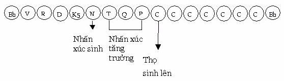
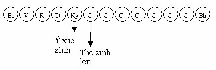

|
Luận
giải Kinh Chánh Tri Kiến Tỳ khưu Chánh Minh
Tiêu đề 10- Trí hiểu rõ về Xúc. Chánh kinh. “Chư Hiền, thế nào là xúc (phassa), thế nào là tập khởi của xúc, thế nào là đoạn diệt của xúc, thế nào là con đường đưa đến đoạn diệt của xúc? Chư Hiền, có sáu loại xúc này: Nhãn xúc (cakkhusamphassa), nhĩ xúc (sotasamphassa), tỷ xúc (ghānasamphassa), thiệt xúc (jiivhāsamphassa), thân xúc (kāyasamphassa), ý xúc (manosamphasssa). Từ tập khởi của sáu xứ, có tập khởi của xúc (saḷāyatanasamudayā phassasamudayo). Từ đoạn diệt của sáu xứ, có đoạn diệt của xúc (saḷāyatananirodhā phassanirodho) và Thánh đạo tám ngành này là con đường đưa đến đoạn diệt của xúc. Giải. 1- Ý nghĩa từ phassa (xúc). Phassa xuất phát từ ngữ căn PHAS, nghĩa là chạm vào, tiếp xúc [1]. Nên ghi nhận “xúc là một danh pháp, nên sự đụng chạm giữa các sắc pháp với sắc pháp, như lá cây rơi xuống chạm đất, hay viên đá chạm vào vách núi ... không phải là xúc”, sự “chạm vào” ở đây là “tâm chạm vào cảnh”. Pāli có giải thích như sau [2]. - “Ārambhaṃ phusatī’ti = phasso (hay phusanaṃ = phasso). Chạm với cảnh, gọi là xúc.” -“Phusanti sampayuttadhammā etenāti = phasso. Các pháp hòa hợp nhau, cùng chạm cảnh, gọi là xúc”. Các Giáo Thọ Sư lưu ý đến ngữ cách: “Từ tập khởi của 6 xứ, có tập khởi của xúc”, 6 xứ được dùng với số nhiều (saḷāyatanasamudayā), trong khi xúc được dùng với số ít (phassasamudayo). Nên có câu hỏi rằng: “Một xúc không sinh lên từ tất cả xứ, tất cả xúc không phải sinh lên từ một xứ. Vì sao Đức Phật thuyết “do sáu xứ, (một) xúc sinh lên (saḷāyatana paccayā phasso)?”. Nghĩa là “một xúc không phải được tất cả xứ sinh lên, ngược lại một xứ cũng không sinh lên tất cả xúc, bao nhiêu xứ thì có bấy nhiêu xúc. Vì sao: Sáu xứ là số nhiều trong khi xúc ở số ít?”. Ngài Buddhaghosa có giải thích ([3]: “Câu hỏi được nêu lên rất đúng, một xúc tuy không được sinh lên từ tất cả xứ, nhưng được sinh lên từ nhiều xứ, như nhãn xúc (cakkhusamphassa) sinh lên do có: nhãn xứ (thần kinh nhãn), sắc xứ (cảnh sắc), ý xứ (tức nhãn thức) và pháp xứ (là các tâm sở đồng sinh với xúc). Do vậy, tuy là một xúc, nhưng đã bao gồm nhiều xứ theo cách thích hợp. Các xúc còn lại cũng thê”[4]. Chúng ta có thể hiểu như sau: “Gọi là một cái nhà, là đã bao gồm: rui, mè, kèo, cột, vách, trần...Tức là nhiều cột, nhiều rui, nhiều kèo... hợp lại thành một cái nhà. Và chỉ nói “một cái nhà là đủ nghĩa”. “Tasmā eva hi. Eko panekāyatanapphavo iti dīpito. Phassoyaṃ ekavacananiddesa nīdha tādinā. Ekavacananiddesenāti saḷāyatana paccayā phasso’ti. “Chính vì thế. Một xúc được (Đức Phật) dạy cho mỗi trường hợp. Xúc tuy chỉ có một, lại xuất phát từ nhiều căn nguyên (tức là xứ - Ns). (Do đó) Xúc là số ít trong câu nói “sáu xứ duyên cho xúc”. 2- Phân tích. Câu nói:“Tất cả xúc không phải sinh lên từ một xứ”. Có 12 xứ gồm sáu nội xứ là: mắt, tai, mũi, lưỡi thân và ý xứ. Sáu ngoại xứ là: Sắc, thinh, mùi, vị, xúc và pháp xứ. Chính xác hơn, pháp xứ (dhammāyatana) bao gồm cả nội xứ lẫn ngoại xứ. Vì theo Luận Atỳđàm thì chi pháp của pháp xứ là: Sắc vi tế (16 sắc) + tất cả tâm sở + Nípbàn. Ở đây chỉ nêu lên 6 nội xứ, nhưng bao hàm cả ngoại xứ. Và từ xứ, xúc sinh khởi, xứ sai biệt nên xúc cũng sai biệt. “Dhātunānattaṃ, bhikkhave, paṭicca upajjati phussanānattaṃ. “Này các Tỳkhưu, do giới sai biệt nên xúc sai biệt sinh khởi.” [5]. Giới (dhātu), là xứ được phân tích rộng, chi pháp như nhau, chỉ khác tên gọi và khía cạnh. Như nhãn giới chi pháp là thần kinh nhãn (giống như nhãn xứ); sắc giới chi pháp là sắc cảnh sắc (giống như sắc xứ), nhãn thức giới chi pháp là 2 tâm nhãn thức (giống như nhãn thức).... Chỉ khác là ý giới chi pháp là tâm khán ngũ môn và 2 tâm tiếp thâu. Ý thức giới chi pháp là “những tâm còn lại”. “Kathañca, bhikkhave, dhātunānattaṃ?. “Này các Tỳkhưu, thế nào là giới sai biệt? Cakkhudhātu rūpadhātu cakkhuviññāṇadhātu. Nhãn giới, sắc giới, nhãn thức giới. Sotadhātu saddadhātu sotaviññāṇadhātu. Nhĩ giới, thinh giới, nhĩ thức giới. Ghānadhātu gandhadhātu, ghānaviññāṇadhātu. Tỷ giới, hương giới, tỷ thức giới. Jīvhādhātu rasadhātu jīvhāviññāṇadhātu. Thiệt giới, vị giới, thiệt thức giới. Kāyadhātu phoṭṭhappadhātu kāyaviññāṇadhātu. Thân giới, xúc giới, thân thức giới. Manodhātu dhammadhātu manoviññāṇdhātu. Ý giới, pháp giới, ý thức giới. Idaṃ vuccati, bhikkhave dhātunānattaṃ. Này các Tỳkhưu, đây gọi là giới sai biệt.”(sđd). Sở dĩ, thọ sai biệt như: Nhãn xúc thọ, nhĩ xúc thọ... là do xúc sai biệt này: “Dhātunānattaṃ, bhikkhave, paṭicca upajjati phussanānattaṃ. “Này các Tỳkhưu, do duyên xúc sai biệt, thọ sai biệt sinh khởi. No phussanānattaṃ, paṭicca upajjati dhātunānattaṃ. Không phải do duyên thọ sai biệt, xúc sai biệt sinh khởi”.[6] Kinh văn trên xác định “xúc sai biệt là do xứ sai biệt, không phải do thọ sai biệt”. Lại có câu hỏi tiếp: Vì sao có xúc sai biệt này? Vì có dục (chanda) sai biệt. “Añño, bhikkhave, kāmo rūpesu, añño kāmo saddesu, añño kāmo gandhesu, añño kāmo rasesu, añño kāmo phoṭṭhabbesu. Ayam, vuccati, bhikkhave, kāmānaṃ vemattatā. “Này các Tỳkhưu, dục trên các sắc là khác, dục trên các tiếng là khác, dục trên các mùi là khác, dục trên các vị là khác, dục trên các xúc là khác. Này các Tỳkhưu, đây gọi là các dục sai biệt” [7]. Bốn khía cạnh thực tính của xúc là: - Trạng thái: Va chạm cảnh (phussanalakkhaṇo). - Phận sự: Làm cho tâm gặp cảnh (saṅghattanaraso). - Thành tựu: Hội hợp giữa Vật, cảnh và thức (saṅgatipaccupaṭṭhāno). - Nhân cần thiết: Có 6 xứ (saḷāyatanapadaṭṭhāno). 3- Sáu xúc. - Nhãn xúc: Là xúc sinh từ nhãn thức. Như có Pāli sau: “Cakkhuviññāṇena sampayutto samphasso’ti = cakkhusamphasso. Sự chạm (cảnh) của nhãn thức và các pháp hòa hợp (với nhãn thức), gọi là nhãn xúc”. - Nhĩ xúc: Là xúc sinh từ nhĩ thức. Như có Pāli sau: “Sotaviññāṇena sampayutto samphasso’ti = sotasamphasso. Sự chạm (cảnh) của nhĩ thức và các pháp hòa hợp (với nhĩ thức), gọi là nhĩ xúc”. - Tỷ xúc: Là xúc sinh từ tỷ thức. Như có Pāli sau: “Ghānaviññāṇena sampayutto samphasso’ti = ghānasamphasso. Sự chạm (cảnh) của tỷ thức và các pháp hòa hợp (với tỷ thức), gọi là tỷ xúc”. - Thiệt xúc:Là xúc sinh từ thiệt thức. Như có Pāli sau: “Jīvhāviññāṇena sampayutto samphassoti = jīvhāsamphasso. Sự chạm (cảnh) của thiệt thức và các pháp hòa hợp (với thiệt thức), gọi là thiệt xúc”. - Thân xúc:Là xúc sinh từ thân thức. Như có Pāli sau: “Kāyaviññāṇena sampayutto samphassoti = kāyasamphasso. “Sự chạm (cảnh) của thân thức và các pháp hòa hợp (với thân thức), gọi là thân xúc”. - Ý xúc: Là xúc sinh từ ý thức. Như có Pāli sau: “Manoviññāṇena sampayutto samphassoti = manosamphasso. “Sự chạm (cảnh) của ý thức và các pháp hòa hợp (với ý thức), gọi là ý xúc. Năm xúc: Nhãn xúc, nhĩ xúc, tỷ xúc, thiệt xúc, thân xúc, là xúc sanh khởi trong 5 đôi thức, là xúc nội ngoại phần. Ý xúc ở đây là nội xúc, là xúc có trong 22 tâm quả hiệp thế (2 tâm Tiếp thâu, 3 tâm Quan sát, 8 tâm quả Dục giới hữu nhân, 5 tâm quả thiền Sắc giới và 4 tâm quả thiền Vô sắc giới). Những xúc này không tác động nhiều đến tâm, chỉ có loại xúc trong tâm đổng lực (javanacitta) làm duyên cho thọ sinh khởi tác động mạnh đến tâm. Tâm đổng lực thường nhận biết hai loại cảnh: Cảnh ngoại phần (sắc , thinh, mùi, vị, xúc) và cảnh nội phần (cảnh pháp), như vậy cũng có hai loại xúc: Xúc nội phần và xúc ngoại phần, hai loại xúc này làm duyên cho thọ sinh lên.  Như bảng tâm lộ nhãn môn ở trên, khi tâm nhãn thức sinh lên rồi, thì xúc sinh từ nhãn thức sinh khởi, đến tâm Phán đoán thì xúc hoàn chỉnh, khi tâm đổng lực (1) sinh khởi thì Xúc làm duyên cho thọ sinh lên, từ những tâm đổng lực (2) cho đến tâm đổng lực (7), thì thọ tăng trưởng, khi lộ ý nối lộ ngũ xuất hiện thì thọ tăng trưởng hoàn chỉnh. Đức Thế Tôn có dạy: “Cakkhuñ ca paticca rūpaṃ ca upajjhati cakkhuviññāṇaṃ, tiṇṇaṃ saṅgati phasso: “Do duyên mắt và duyên các sắc, sinh khởi nhãn thức, ba pháp này hội hợp là xúc”[8]. Mắt ở đây ám chỉ cho thần kinh nhãn (cakkhupasāda), không phải là mắt thịt bên ngoài thường hiểu. Người đã chết, tuy còn mắt, tai, mũi, lưỡi, thân nhưng các sắc thần kinh cùng tâm thức không còn, hoặc giả người mù tuy có con mắt nhưng không có thần kinh nhãn, người này không có tâm nhãn thức. Tương tự với người điếc... Do đó, nói đến xúc do xứ (āyatana) làm duyên để sinh lên, phải hội đủ ba pháp như lời dạy của Đức Thế Tôn. Tương tự: - Đối với nhĩ xúc thì: “Sotañ ca paticca sadde ca upajjhati sotaviññāṇaṃ tiṇṇaṃ saṅgati phasso: “Do duyên tai và do duyên các tiếng, sinh khởi nhĩ thức, ba pháp này hội hợp là xúc” (sđd). - Đối với tỷ xúc thì: “Ghānañ ca paticca gandhe ca upajjhati ghānaviññāṇaṃ tiṇṇaṃ saṅgati phasso: Do duyên mũi và do duyên các mùi, sinh khởi tỷ thức, ba pháp này hội hợp là xúc” (sđd). - Đối với thiệt xúc thì: “Jīvhañ ca paticca rase ca upajjhati jīvhāviññāṇaṃ tiṇṇaṃ saṅgati phasso: “Do duyên lưỡi và do duyên các vị, sinh khởi thiệt thức, ba pháp này hội hợp là xúc”(sđd) . - Đối với thân xúc thì: “Kāyañ ca paticca phoṭṭhabbe ca upajjhati kāyaviññāṇaṃ tiṇṇaṃ saṅgati phasso: “Do duyên thân và do duyên cácxúc chạm, sinh khởi thân thức, ba pháp này hội hợp là xúc”(sđd). - Đối với ý xúc thì: “Manañ ca paticca dhamme ca upajjhati manoviññāṇaṃ tiṇṇaṃ saṅgati phasso: Do duyên ý [9] và do duyên các pháp, sinh khởi ý thức, ba pháp này hội hợp là xúc.”(sđd). Ý ở đây là ý môn, chỉ cho 19 tâm hữu phần (2 tâm quan sát xả thọ, 8 tâm quả Dục giới hữu nhân, 5 tâm quả thiền Sắc giới và 4 tâm quả thiền Vô sắc giới), không phải là sắc ý vật (hadayavatthu). Điều này rất rõ ràng khi chúng ta hiểu biết rằng: “Vị Phạm thiên Vô sắc không có sắc ý vật, nhưng vẫn có ý xúc.” Dùng bảng lộ tâm nhãn môn để minh họa, như sau:  Trong 6 xúc thì: - Cõi Dục giới có đủ 6 xúc (trừ trường hợp hư hoại sắc thần kinh). - Cõi Sắc giới hữu tưởng có 3 xúc: Nhãn xúc, nhĩ xúc và ý xúc. - Cõi Sắc giới Vô tưởng: Không có xúc nào cả. - Cõi Vô sắc giới có 1 xúc: Ý xúc. 1- Luận giải. Xúc là một pháp rất quan trọng đối với các pháp khác, Đức Phật có dạy: “Sabbe dhannā phassasamudayā: “Các pháp lấy xúc làm tập khởi”. [10]. Vì thế, các vị Luận sư dạy rằng: “Thọ, tưởng, tư (cetanā) sanh khởi lên, cũng do xúc làm duyên”. Xúc là một danh pháp tùy thuộc tâm (Xúc là một trong 50 tâm sở thuộc hành uẩn), không thể nhận thức bằng các giác quan. Nhưng xúc tự hiện rõ khi cảnh chạm vào tâm, như chúng ta cảm thấy bất bình khi thấy (hoặc nghe) một người con bất hiếu với cha mẹ, hay giữ mãi ấn tượng tốt (hoặc xấu) với một người nào đó trong một thời gian dài. Một người có thể ngất xỉu khi nhận được một hạnh phúc bất ngờ xẩy đến (như đột nhiên được hưởng một tài sản lớn), hoặc có thể “chết khiếp” khi một cảnh tượng kinh hoàng xuất hiện. Giả như có dự kiến trước về những tình huống ấy (cảnh), có thể không rơi vào bất tỉnh. Một cảm xúc mạnh bất ngờ trước hiện cảnh, thường lưu lại ấn tượng hoặc thích thú hoặc khó chịu, để rồi khi gặp lại cảnh cũ lại phát sinh thích thú hay khó chịu, và ấn tượng này khó phai trong thời gian dài, thậm chí trọn cả kiếp sống, để rồi chúng trở thành “pháp ngũ ngầm – anusaya” trong tâm thức. Biết bao người sống mãi với “kỷ niệm buồn”, hay luôn bất mãn với một người, chỉ vì giây phút tiếp xúc ban đầu, kẻ ấy đã làm họ có cảm giác không ưa thích ... Thế là tâm bị trói buộc trong “ám ảnh” ấy, biện pháp giải thoát tâm ra khỏi trói buộc này là: “Quá khứ không truy tầm” [11], một khi ấn tượng trạng lại hãy chấm dứt nó bằng niệm (sati) với đề mục khác và niệm này nên đi kèm với trí quán (ñāṇa vipassanā). Để ngăn chận “bất thiện pháp” sinh lên từ xúc, hãy “không nắm giữ tướng chung, không nắm giữ tướng riêng” và “quân bình tâm trước những cảnh trần”. a- Xúc tạo ra những bất thiện pháp. Đơn thuần chỉ là “tâm chạm cảnh” thôi, thế mà biết bao hệ quả tai hại nảy sinh từ “tâm chạm cảnh” ấy. Chính xúc lôi kéo tâm chúng sinh rơi vào ác, bất thiện nghiệp, trong Sớ giải kinh Bổn sanh chúng ta tìm thấy rất nhiều trường hợp “do xúc dẫn dến ác, bất thiện nghiệp”. Có thể hiểu “ái trực tiếp sinh ra khổ, còn xúc là gián tiếp sinh ra khổ”. Đức Phật dạy rõ về “sự nguy hại của xúc” trong bài kinh “người chiến sĩ” [12]., tóm lược như sau: - Có hạng Tỳkhưu ví như người chiến sĩ khi vừa thấy bụi mù dấy lên, liền chùn chân (saṃsīdati), rủn chí (visīdeti), không còn can đảm (na santhambhati), không thể tham gia chiến trận. Là vị Tỳkhưu được nghe: “Tại làng hay thị trấn kia, có nữ nhân xinh đẹp, khả ái”, vị ấy từ bỏ đời sống Phạm hạnh, trở về với đời sống thế tục. (Do nhĩ xúc làm duyên - Ns). Có thể hiểu gia tộc vị Tỳkhưu này, không muốn vị ấy sống đời sống Phạm hạnh, nên dụ dỗ vị ấy hoàn tục bằng cách hứa hẹn “một cô gái xinh đẹp, hiền thục, đoan trang sẽ là vợ vị ấy, nếu vị ấy chịu hoàn tục”. - Có hạng Tỳkhưu ví như người chiến sĩ chịu đựng được bụi mù dấy lên, nhưng khi thấy cờ xí dựng lên, liền chùn chân, rủn chí, không còn can đảm, không thể tham gia chiến trận. Là vị Tỳkhưu khi thấy nữ nhân xinh đẹp, khả ái. Vị ấy trở về với đời sống thế tục. (Do nhãn xúc làm duyên - Ns). - Có hạng Tỳkhưu ví như người chiến sĩ chịu đựng được bụi mù dấy lên, chịu đựng được cờ xí, nhưng khi nghe tiếng la hét, liền chùn chân, rủn chí, không còn can đảm, không thể tham gia chiến trận. Là vị Tỳkhưu bị nữ nhân cười nhạo, nói mơn trớn, cợt nhả. Vị ấy trở về với đời sống thế tục. - Có hạng Tỳkhưu ví như người chiến sĩ chịu đựng được bụi mù dấy lên, chịu đựng được cờ xí, chịu đựng được tiếng la hét, nhưng bị thương trong khi xáp chiến lâm trận, liền thất kinh thất đảm. Là vị Tỳkhưu bị nữ nhân ngồi sát một bên, nằm sát một bên, được vuốt ve mơn trớn, rơi vào hành dâm cùng nữ nhân ấy. (Do thân xúc làm duyên – Ns). Sau đây là vài mẫu chuyện minh họa về tai hại của xúc. Nhãn xúc dẫn đến bất thiện pháp. Có vị Tỳkhưu trú trong thành Sāvatthī (Xávệ), một hôm đi khất thực, chợt trông thấy một nữ nhân tuyệt sắc, với xiêm y diễm lệ, vị ấy sinh lòng mê mẫn nàng. Khi về đến tịnh xá, vị ấy không còn tinh tấn hành pháp, không còn tìm thấy an lạc trong bất cứ oai nghi nào. Nhân đó, Đức Phật thuyết lên Bổn sự, nói về Đức vua Sivi chỉ nhìn thấy nhan sắc nàng Ummadantī, tâm tư rơi vào đắm nhiễm, tương tư nàng Ummadantī. [13] b- Nhĩ xúc dẫn đến bất thiện pháp. Có một Phạm thiên hết phước, tái sinh vào một gia tộc trưởng giả. Hài tử khi sinh ra, không chịu được mùi nữ nhân, nếu có nhũ mẫu nào bồng ẳm, hài tử khóc thét lên, do đó hài tử được đạt tên là Anitthigandha (không có mùi nữ nhân), nhũ mẫu muốn cho hài tử bú, phải kê gối trước ngực mình. Khi đến tuổi trưởng thành, cha mẹ bảo chàng cưới vợ, chàng tạo ra pho tượng thiếu nữ rất xinh đẹp bằng vàng. Nói với song thân rằng: - Nếu cha mẹ tìm được một cô gái xinh đẹp như pho tượng này, con sẽ cưới cô ấy làm vợ. Song thân chàng thuê các Bàlamôn đi tìm cô gái như pho tượng, về sau các vị ấy đã tìm được, và báo tin cho ông bà trưởng giả biết. Công tử Anitthigandha nghe “có cô gái xinh đẹp hơn pho tượng”, chàng nỗi lên lòng khao khát, mong mau chóng gặp cô gái. Bất ngờ, cô gái bị bịnh chết dọc đường, nghe tin này chàng phát sinh sầu khổ. Đức Thế Tôn quán xét thế gian, thấy được duyên lành của Anitthigandha, Ngài ngự đi khất thực nơi nhà của chàng. Và vào lúc hợp thời, Ngài thuyết giảng pháp thoại đến Anitthigandha, tiếp theo Ngài thuyết lên kệ ngôn: “Kāmato jāyati soko. Kāyato jāyati bhayaṃ. Kāmato vippamutassa. Natthi soko kuto bhayaṃ. “Dục ái sinh sầu ưu. Dục ái sinh sợ hãi. Ai vượt thoái dục ái. Không sầu, đâu sợ hãi”.[14] - Tỷ xúc dẫn đến bất thiện pháp. Khi mũi chạm vào những hương thơm, quyến rũ tâm chúng sinh rơi vào tham ái, hoặc chạm vào những mùi xú uế, tanh tưởi, tâm rơi vào khó chịu, là tâm sân. Trong Bổn sanh có ghi câu truyện: Bồtát có thời tái sanh làm quạ chúa. Khi về già Ngài giao đàn quạ lại cho con Ngài cai quản, Bồtát dặn quạ con rằng: - Này con, con có dẫn đàn đi tìm thức ăn nơi nào cũng được, nhưng đừng nên ra hòn đảo, vì sẽ có tai hại đến đàn quạ và cả con nữa. Quạ con vâng theo lời dạy của Bồtát, khi mùa xoài đến. Mùi hương thơm của xoài theo gió đi đến đàn quạ. Quạ con tuy nhớ lời cha dặn, nhưng mùi thơm của xoài đã quyến rũ, y cùng cả đàn quạ ra hòn đảo để ăn xoài. Khi dùng xoài thỏa thích, đàn quạ trở về tổ. Vì ăn quá nhiều xoài nên bầy quạ phát sinh buồn ngủ khi vượt biển, một số lớn rơi xuống biển trong đó có quạ con. Câu truyện trên cho thấy, vị xoài trực tiếp dẫn đến tham đắm gây ra tai họa cho đàn quạ, còn mùi thơm của xoài là gián tiếp. - Thiệt xúc dẫn đến bất thiện pháp. Có vị Hoàng tử trẻ tính tình hung bạo, Đức vua suy nghĩ: “Con ta còn trẻ mà tính tình thô bạo, khi lên ngôi vua trị vì sẽ khổ cho dân chúng. Ta hãy tìm cách giáo hóa tính tình Hoàng tử”. Đức vua nhờ vị ẩn sĩ (là Bồtát) giáo hóa Hoàng tử, vị ẩn sĩ nhận lời. Một hôm Hoàng tử đến nơi ngụ của ẩn sĩ, thấy cây nimba còn non, rất xinh đẹp. Hoàng tử hái lá nimba ăn, lá rất đắng, Hoàng tử nỗi giận nhỗ cây nimba còn non, vò nát trong tay. Thấy vậy, vị ẩn sĩ nói rằng: - Cây Nimba là thảo mộc vô tri, Hoàng tử còn thô bạo như vậy. Khi Hoàng tử trị vì thiên hạ, ai nói nghịch ý Hoàng tử thì sẽ khổ như thế nào. Chả trách dân chúng ta thán về tính tình hung bạo của Thái tử. Hoàng tử chợt tỉnh ngộ, thay đổi tính tình trở nên hiền thiện. - Thân xúc dẫn đến bất thiện pháp. Trong thời Đức Phật, có vị Tỳkhưu xuất gia trong giáo pháp này, trước khi xuất gia vị ấy đã có vợ. Khi xuất gia, tâm tư vị ấy nghĩ đến người vợ cũ, không còn tha thiết đến đời sống Phạm hạnh. Chư Tỳkhưu trình bạch lên Đức Thế Tôn về việc này, Ngài cho gọi vị Tỳkhưu ấy đến, hỏi rằng: - Có thật chăng, này Tỳkhưu, nghe nói ngươi bị ái nhiễm? - Bạch Thế Tôn, có thật vậy. - Này Tỳkhưu, ngươi bị ái nhiễm bởi ai? - Bạch Thế Tôn, người vợ trước của con rất êm dịu khi xúc chạm. Con không thể bỏ nàng được. - Này Tỳkhưu, chính nữ nhân ấy tạo ra bất hạnh cho ông trong quá khứ. Nhờ có Ta, ngươi mới thoát chết. Theo lời thỉnh cầu của chư Tỳkhưu, Đức Thế Tôn thuật lại Bổn sanh. Tiếp theo, Đức Thế Tôn thuyết lên bốn sự thật ( Tứ diệu đế). Dứt thời pháp vị Tỳkhưu bị ái nhiễm, chứng quả Dự lưu. [15] Nên ghi nhận: “Năm xúc trên dẫn đến bất thiện là do có ý xúc (là xúc trong những tâm đổng lực), ý xúc này đi chung với dục tầm (kāmavitakko), dục tưởng (kāmasaññā)”. *- Ý xúc dẫn đến bất thiện pháp. Như bà Patacārā bị điên loạn chỉ vì tiếp chạm liên tục những cảnh não lòng: Chồng chết, con chết, cha mẹ chết. Đức Phật có dạy: “Dhātunānattaṃ, bhikkhave, paṭicca uppajjati saññānānattaṃ, saññānānattaṃ paṭicca uppajjati saṅkappanānattaṃ, saṅkappanānattaṃ paṭicca uppajjati phassanānattaṃ. “Này các Tỳkhưu, do duyên giới sai biệt, tưởng sai biệt sinh khởi. Do duyên tưởng sai biệt, tư duy (saṅkapppa - tầm) sai biệt sinh khởi. Do duyên tư duy sai biệt, xúc sai biệt sinh khởi...” [16]. Đình chỉ được dục tầm, dục tưởng thì bất thiện pháp không thể sinh lên, thay vào đó là thiện pháp. Mặt khác, chỉ vì các căn quyền không phòng hộ, nên các xúc do duyên trần cảnh cùng căn quyền sinh lên là xúc bất thiện. “Aguttaṃ cakkhusotasmiṃ, indriyesu asaṃvutaṃ. Makkhikānupatissanti saṅkappā rāganissitā. “Tai, mắt không gìn giữ, các căn không phòng hộ, Ruồi lằng sẽ bu đến, các tư duy tham ái....”[17]. b- Xúc dẫn đến thiện pháp. Hình ảnh vị sa môn mặc y cũ rách, làm xúc động tâm của cô gái làm công ba năm mới có được 2 bộ y mới, nàng dâng đến vị sa môn (vị Thánh Alahán) chiếc y thứ nhất, Ngài mặc vào, nàng thấy Ngài trở nên xinh đẹp, tâm vô cùng hoan hỷ, nàng lại dâng tiếp bộ y thứ hai. Hậu thân của cô gái là nàng Ummadantī, và chính là tiền thân của bà Uppalavaṇnā, đệ nhị Thánh Nữ của Đức Thế Tôn trong hàng Tỳkhưu ni. Đây là nhãn xúc làm khởi sinh tâm thiện. Rất nhiều trường hợp Kinh điển đề cập đến: “Vị thánh Thinh văn, khi nghe pháp (nhĩ xúc), từ đó phát triển Minh quán chứng đạt đạo quả”. Như Ngài Sāriputta nghe bốn câu kệ từ Đức Assaji, Ngài Bāhiya nghe kệ ngôn nói về lý vô ngã từ Đức Thế Tôn... Đây là nhĩ xúc dẫn đến thiện, sau cùng là “chứng đạt Thánh quả”. Hay câu truyện về 500 vị Tỳkhưu tu tập thiền quán, nhưng chưa thành đạt Thánh tuệ. Các Ngài trở về Tinh xá Kỳviên (Jetavanavihāra) để yết kiến Đức Thế Tôn. Khi về đến tự viện, trời đổ mưa, các ngài đứng trú mưa, nhìn thấy những bọt nước nổi bập bềnh rồi vở tan nhanh chóng. Các Ngài khởi lên tư tưởng: “Tự ngã này cũng như bọt nước, chúng có rồi không, không rồi có”, các Ngài tập trung vào trí quán ấy. Đức Thê Tôn phóng hào quang đến trước các Ngài, thuyết lên kệ ngôn: “Yathā bubbulakaṃ passe. Yathā passe marīcikaṃ Evaṃ lokaṃ avekkhantam. Maccurājā na passati. “Hãy nhìn như bọt nước. Hãy nhìn như cảnh huyễn. Quán nhìn đời như vậy. Thần chết không bắt gặp”.[18] Về thân xúc dẫn đến thiện hay Thánh quả, như Ngài Pūtigatta Tissa, Ngài Godhika, Ngài Channa... Hành giả tu tập thiền chỉ tịnh hay thiền Minh quán, phải nương vào xúc, từ xúc phát triển niệm (sati) hay tuệ quán để thành tựu những pháp thượng nhân là: Thiền định, thắng trí và đạo quả Siêu thế. 2- Xúc duyên cho thọ. - Khi mắt tiếp xúc với với cảnh sắc tốt hay xấu sẽ làm sanh khởi 3 thọ: Lạc, khổ và xả. Theo thực tính thì một trong ba thọ sẽ hiện khởi nơi tâm đổng lực như đã giải ở trên. Tương tự như thế, đối với nhĩ xúc, tỷ xúc, thiệt xúc và thân xúc. Về ý xúc thì: “Đôi khi nhớ lại điều gì thích thú thì nở nụ cười”, đây là ý xúc duyên cho thọ hỷ. Hoặc cảm thấy buồn khi nghĩ đến những bất hạnh đã qua của mình, đây là ý xúc duyên cho khổ thọ. Hay thản nhiên suy gẫm một điều nào đó, dây là ý xúc duyên cho xả thọ. Chấm dứt trí hiểu rõ Xúc. -ooOoo- Tiêu đề 11- Trí hiểu rõ về sáu xứ (saḷāyatana). Chánh kinh. “Chư Hiền, khi nào vị Thánh biết sáu xứ (saḷāyatanañ – ca pajānāti), biết tập khởi của sáu xứ, biết đoạn diệt của sáu xứ, biết con đường đưa đến đoạn diệt của sáu xứ, khi ấy vị Thánh đệ tử có chánh tri kiến – và thành tựu diệu pháp này. Chư Hiền, thế nào là sáu xứ, thế nào là tập khởi của sáu xứ, thế nào là đoạn diệt của sáu xứ, thế nào là con đường đưa đến đoạn diệt của sáu xứ?. Chư hiền, có sáu xứ này: Nhãn xứ (cakkhāyatanaṃ), nhĩ xứ (sotāyatanaṃ), tỷ xứ (ghānāyatanaṃ), thiệt xứ (jīvhāyatanaṃ), thân xứ (kāyāyatanaṃ) và ý xứ (manāyatanaṃ). Từ tập khởi của danh sắc (nāmarūpasamudayā) có tập khởi của sáu xứ, từ đoạn diệt của danh sắc có đoạn diệt của sáu xứ, và Thánh đạo tám ngành là con đường đưa đến đoạn diệt sáu xứ, tức là Chánh kiến, chánh tư duy, chánh ngữ, chánh nghiệp, chánh mạng, chánh tinh thấn, chánh niệm, chánh định. Giải. 1- Ý nghĩa từ āyatana(xứ). Phân tích từ āyatana (danh từ trung tính) được: Ā + yata. Yata là quá khứ phân từ của yameti nghĩa là: Xem xét, kiểm soát. Yameti xuất phát từ ngữ căn YAM nghĩa là “gìn giữ”, “bảo vệ,” hoặc “có đôi”, “sự canh phòng”, như yamaka (một đôi, một cặp)...[19]. Ngài Đại Luận sư Buddhaghosa có nêu lên 5 ý nghĩa của āyatana, như sau: “Apica nivāsaṭṭhānaṭṭhena ākaraṭṭhena samosaraṇaṭṭhānaṭṭhena sañjātidesaṭṭhena kāraṇaṭṭhena ca āyatanaṃ veditabbaṃ: Lại nữa, nên hiễu Xứ nghĩa là: Chỗ trú ngụ (nivāsaṭṭhāna), chỗ chứa (ākara), chỗ gặp gỡ (samosaraṇa), nơi sinh sản (sañjatidesa) và nguyên nhân (kāraṇa).”[20]. Xứ mang ý nghĩa là chỗ trú ngụ, như: “Nơi cư ngụ của vị lãnh chúa (issarāyatanaṃ), nơi cư ngụ của thần Vāsu (Vāsudevāyatanaṃ)...”. Xứ mang ý nghĩa là chỗ chứa, như “mỏ vàng (suvaṇṇāyatana), mỏ ngọc (rajatāyatana)..”. Xứ mang ý nghĩa là chỗ gặp gỡ, như: “Trong đoạn kinh: “Và như vậy, ở trong lạc xứ, những vị chư thiên trong hư không đến đảnh lễ vị ấy” (sāsane pana “manoramme āyatane sevanti naṃ vihaṅgamā” ) (A. 2.5.38). Xứ mang ý nghĩa là nơi sinh sản, như: “Đất phương Nam là nơi (của) ác thú (dakkhiṇāpatho gunnaṃ āyatanaṃ)”. Xứ mang ý nghĩa là nguyên nhân, như: “Vị ấy có khả năng chứng được điều ấy khi có nơi thích hợp (tatra tatreva sakkhibhabbataṃ pāpuṇāti sati sati āyatane) (A.i.3.102). Chữ saḷāyatana (sáu xứ), thông thường chỉ cho nội xứ (ajhattāyatana), đó là: nhãn xứ (cakkhāyatanaṃ), nhĩ xứ (sotāyatanaṃ), tỷ xứ (ghānāyatanaṃ), thiệt xứ (jīvhāyatanaṃ), thân xứ (kāyāyatanaṃ) và ý xứ(manāyatanaṃ). Như Kinh văn: “Katamañca bhikkhave, saḷāyatanaṃ? Cakkhāyatanaṃ, sotāyatanaṃ, ghānāyatanaṃ, jīvhāyatanaṃ, kāyāyatanaṃ, viññāṇāyatanaṃ “Này các Tỳkhưu, thế nào là sáu xứ? Nhãn xứ, nhĩ xứ, tỷ xứ, thiệt xứ, thân xứ và ý xứ”[21]. Các Giáo thọ sư giải thích từ saḷāyatana như sau: - “Āyataṃ samsāravaṭṭaṃ nayatīti = Āyatanaṃ. (Pháp nào) dẫn đến luân hồi, pháp ấy gọi là xứ”. Sở dĩ các Ngài giải thích “Xứ là pháp dẫn đến luân hồi”, là nương vào lời giảng rộng của Đức Ānanda về lời dạy vắn tắt của Đức Thế Tôn. Có lần Đức Thế Tôn thuyết vắn tắt cho chư Tỳkhưu rằng: “Nāhaṃ bhikkhave, gamanena lokassa antaṃ ñāteyyaṃ, daṭṭheyyaṃ patteyyanti vadāmi. Na ca nāhaṃ bhikkhave, appatvā lokassa antaṃ dukkhassa antakiriyaṃ vadāmī‘ti. “Này các Tỳkhưu, Ta tuyên bố rằng sự tận cùng thế giới không thể biết, không thể thấy, không thể đạt được bằng cách đi đến tận cùng thế giới. Ta cũng không tuyên bố rằng, này các Tỳkhưu, sự chấm dứt đau khổ có thể làm được bằng cách không đạt đến tận cùng thế giới”. Đức Ānanda giải thích rộng: “Cakkhunā kho, āvuso, lokasmiṃ lokasaññī hoti lokamāni. Sotena kho, āvuso.... ghānena kho, āvuso.... jīvhāya kho, āvuso.... kāyena kho, āvuso... Manena kho, āvuso lokasmiṃ lokasaññī hoti lokamāni. Yena kho, āvuso, lokasmiṃ lokasaññī hoti lokamāni, ayaṃ vuccati ariyassa vinaye loko. “Do mắt, này chư hiền, người ta tưởng đến thế giới (lokasaññī), người ta kiêu mạn về thế giới (lokamānī). Do tai... Do mũi...Do lưỡi.. Do thân.... Do ý, này chư hiền, người ta tưởng đến thế giới, người ta kiêu mạn về thế giới. Này chư Hiền, đây là nghĩ tưởng đến thế giới, kiêu mạn về thế giới, đây gọi là thế giới trong Luật bậc Thánh”[22]. Thế giới ở đây chỉ cho 5 uẩn hay danh sắc. Hay là: “Này các Tỳkhưu, trong sáu pháp này, Tỳkhưu chân chánh nhàm chán, chân chánh ly tham, chân chánh giải thoát, chân chánh thấy được cứu cánh. Sau khi chân chánh thắng tri ý nghĩa, ngay trong hiện tại là người chấm dứt khổ đau. Thế nào là sáu? Là sáu nội xứ”. [23] - “Cha āyatanāni = saḷāyatana. Sáu chỗ quy tụ (của pháp), gọi là sáu xứ”. Như thần kinh nhãn là nơi gặp gỡ của: cảnh sắc, nhãn thức, nhãn xúc, nhãn thọ.... Nói cách khác, chính thần kinh nhãn là chỗ hội tụ 5 uẩn: Sắc, thọ, tưởng, hành và thức uẩn, riêng ý xứ có khi hội 5 uẩn, có khi hội bốn uẩn (trừ sắc uẩn). Khi hội đủ năm uẩn là ý xứ nương sắc ý vật (hadayavatthu) chỉ cho cõi năm uẩn, chỉ có bốn uẩn khi ở cõi Vô sắc. - “Saḷāyatanañ ca chatthāyatanañ ca = saḷāyatana. Sáu (nội) xứ và xứ thứ sáu, gọi chung là sáu xứ.” Nếu nói đầy đủ phải là “nāmarūpa paccayā saḷāyatana chatthāyatanaṃ: Danh sắc duyên cho sáu xứ và xứ thứ sáu”, nhưng chatthāyatana được lược bớt, nhưng vẫn không mất nghĩa là vì: - Xứ thứ sáu chính là ý xứ[24], cũng thuộc về sáu xứ. - Sở dĩ các Ngài tách rời sáu xứ và xứ thứ sáu, do nhấn mạnh đến cõi. Tức là nói đến sáu xứ là nói đến cõi năm uẫn, còn nói đến xứ thứ sáu chỉ riêng cho cõi Vô sắc giới.[25]. Nếu phân tích chi tiết thì: Xứ thứ sáu chỉ cho những tâm xuất hiện ở cõi Vô sắc. Từ ý nghĩa “có đôi” của ngữ căn YAM, nên các Giáo thọ Sư phân tích saḷāyatana (sáu xứ) thành hai loại: sáu xứ trong thân (nội xứ - ajjhattāyatana) và sáu xứ ngoài thân (ngoại xứ - bahiddhāyatana). Thật ra, phần chính của sáu xứ là nội xứ, vì chúng thành tựu từ pháp thủ (upādānadhamma), như kinh văn: “Upādinnupādāniyā dhammā: Các pháp thành tựu do (pháp) thủ.”[26]. Chi pháp của câu này là: 32 tâm quả hiệp thế, 35 tâm sở hợp và 20 sắc nghiệp. Chính trong 20 sắc do nghiệp tạo, năm sắc thần kinh: nhãn, nhĩ, tỷ, thiệt và thân, là 5 xứ (là nhãn xứ, nhĩ xứ, tỷ xứ, thiệt xứ và thân xứ). Còn ý xứ chính là tâm hữu phần (bhaṅvangacitta), là loại tâm quả có phận sự duy trì đời sống của danh pháp, gồm có: 2 tâm quan sát, 8 đại quả, tâm quả thiền Sắc giới và 4 tâm quả thiền Vô sắc giới. Xứ thứ sáu chính là 4 tâm quả thiền Vô sắc. Như vậy, xứ thứ sáu nằm trong ý xứ. Sáu xứ này là những thành phần có tính nhất định. Khi mở rộng thì ý xứ bao gồm tất cả tâm, nhưng thành phần cố định vẫn là tâm hữu phần. Còn sắc, thanh, mùi, vị, xúc và pháp xứ, là bất định. Khi chúng “đi vào” vùng cai quản của nội xứ, chúng được gọi là “okkanta –rơi vào, đi vào” (các Ngài dịch là NHẬP). Đoạn kinh sau minh chứng cho hai loại sáu xứ nội và sáu xứ ngoại. “Này các Tỳkhưu, dục tham đối với mắt là tùy phiền não của tâm. Dục tham đối với tai ... Dục tham đối với mũi ... Dục tham đối với lưỡi ... Dục tham đối với thân... Dục tham đối với ý là tùy phiền não của tâm. Này các Tỳkhưu, khi nào đối với sáu xứ này, đoạn tận được tùy phiền não, thời tâm vị ấy hướng về ly dục. Do biến mãn với ly dục, tâm vị ấy được xem là kham nhẫn, chứng tri đối với các pháp cần phải giác ngộ” . “Này các Tỳkhưu, dục tham đối với sắc là tùy phiền não của tâm. Dục tham đối với thinh ... Dục tham đối với hương ... Dục tham đối với vị ... Dục tham đối với xúc... Dục tham đối với pháp là tùy phiền não của tâm. Này các Tỳkhưu, khi nào đối với sáu xứ này, đoạn tận được tùy phiền não, thời tâm vị ấy hướng về ly dục. Do biến mãn với ly dục, tâm vị ấy được xem là kham nhẫn, chứng tri đối với các pháp cần phải giác ngộ”. [27] 2- Phân tích. a- Nhãn xứ (cakkhāyatana). - Mắt (cakkhu): “Cakkhatīti = cakkhu: Thấy được, gọi là mắt.” [28]. Nghĩa là “tâm biết rõ cảnh qua sự thấy”. Pāli có giải thích: “Cakkhuviññāṇadiṭṭhitaṃ hutvā samavisamaṃ cakkhati ācikkhataṃ viya hotīti = cakkhu: Là chỗ nương đồng thời giúp nhãn thức nhận biết tốt, xấu, sai khác nhau qua “sự thấy”, gọi là mắt.” [29] . Chi pháp của nhãn xứ là thần kinh nhãn (cakkhupasāda). Thần kinh nhãn đơn thuần chỉ là sắc pháp, ở trạng thái bình thường chúng không phải là xứ, như người ngủ say họ vẫn có thần kinh nhãn, nhưng khi ấy không nhận thức được cảnh sắc. Bao giờ cảnh sắc đi vào vùng cai quản của mắt làm nảy sinh tâm nhãn thức, bấy giở chúng mới trở thành xứ (āyatana). Làm cho “nhãn thức sinh khởi”, chủ yếu là tâm sở tác ý (manasikāracetasika) trong tâm Hướng ngũ môn (pañcadvāravajjanacitta). Nhãn thức sinh lên do bốn nhân: - Có thần kinh nhãn. - Có cảnh sắc. - Có ánh sáng. - Có tác ý đến cảnh sắc.[30] Tuy cảnh sắc đi vào khu vực của mắt, nhưng tâm chưa nhận biết cảnh sắc, thần kinh nhãn chưa trở thành nhãn xứ. Bao giờ nhận thức được cảnh sắc, khi ấy thần kinh nhãn mới trở thành nhãn xứ. Như vậy, gọi là nhãn xứ là chỉ cho ba pháp hội lại: Thần kinh nhãn, cảnh sắc và nhãn thức. - Sắc (rūpa). Chữ rūpa có rất nhiều nghĩa, ở đây rūpa chỉ cho “những gì mắt thấy được”. “Rūpayatīti = rūpaṃ: Vật bị thấy, gọi là (cảnh) sắc”. Nghĩa là “tâm nhận thức được hình tướng, màu sắc ... của sắc pháp nào qua con mắt, sắc pháp ấy gọi là cảnh sắc”. Pāli có giải thích: “Rūpayato hadayaṅgatabhayaṃ pakāsetīti =rūpaṃ: Sắc nào nương vật, hiển lộ rõ qua mắt, gọi là (cảnh) sắc. Cảnh sắc chẳng phải chỉ đơn thuần là màu sắc, mà bao gồm tất cả những gì (hình tướng, đường nét, trạng thái xê dịch ....) lọt vào thần kinh nhãn. Tương tự như mắt, sắc chỉ đơn thuần là sắc pháp, bao giờ chúng bị tâm nhận biết qua con mắt, bấy giờ chúng mới trở thành cảnh sắc và trở thành sắc xứ. Chi pháp sắc xứ là sắc cảnh sắc (rūpārammaṇa). Có thể hiểu như sau: Vào đêm thanh của ngày 14 hay 15, ánh trăng rạng rỡ. Dù người biết hay không, ánh trăng vẫn là sắc pháp. Khi người thấy ánh trăng, nhận biết ánh trăng như thế này... như thế này... bấy giờ “ánh trăng trở thành sắc xứ”, khi ấy “ánh trăng là sắc pháp, cũng là sắc xứ ”. Nên Đức Phật dạy: “Này các Tỳkhưu, dục tham đối với sắc là tùy phiền não của tâm.”(sđd). Tức là “sắc đã trở thành cảnh cho tâm”. Bốn sắc xứ còn lại là: Nhĩ xứ, Tỷ xứ, Thiệt xứ và Thân xứ cũng mang ý nghĩa tương tự, chỉ thay đổi chi tiết cho phù hợp. Nhãn xứ là nơi hội của ba pháp: Thần kinh nhãn, cảnh sắc và nhãn thức. Chi pháp của nhãn xứ là thần kinh nhãn, chi pháp của sắc xứ là sắc cảnh sắc. b- Nhĩ xứ (sotāyatana). - Tai (sota): “Suṇātīti = sotaṃ: Nghe được, gọi là tai”. Pāli có giải thích: “Saddaṃ sunanti etenāti = sotaṃ: “Sắc nào nghe được tiếng, sắc ấy gọi là tai”. Chi pháp là thần kinh nhĩ (sotapasāda). - Tiếng (sadda): “Sappatīti = saddo: (Cái được) truyền đi (sappati), gọi là tiếng (âm thanh). Nghĩa là có đặc tính “phát ra”. “Sappati sotaviññeyyabhāvaṃ gacchatīti = sadda: “(pháp nào) đi đến để nhĩ thức biết, gọi là “tiếng”. Nhĩ xứ là nơi hội của ba pháp: Thần kinh nhĩ, cảnh thinh và nhĩ thức. Chi pháp của nhĩ xứ là thần kinh nhĩ, chi pháp của thinh xứ là sắc cảnh thinh. c-Tỷ xứ (ghānāyatana). - Mũi (ghāna): “Ghāyatīti =ghānaṃ: Ngữi, hít được, gọi là mũi”. Pāli có giải thích: “Ghāyanti etenāti = ghānaṃ: “Ngửi được (các mùi), gọi là mũi”. Chi pháp là thần kinh tỷ (ghānapasāda). - Mùi (gandha): “Gandhayatīti = gandha: (Cái) lan tỏa (gandhayati), gọi là mùi. Pāli có giải thích: “Gandhayati attano vatthuṃ sucetīti = gandho: “Cái gì tự chỉ điểm chỗ trú của mình, bắng cách lan tỏa, gọi là mùi”. Chi pháp là sắc cảnh mùi. Ở đây chúng ta thấy có sự khác biệt giữa “tiếng và mùi”, chúng có điểm giống nhau là: “lan đi, truyền đi”, nhưng khác nhau là: Âm thanh không nêu bày chỗ đứng rõ rệt, còn mùi thì trái lại. Khi phát hiện mùi thì phát hiện nơi xuất phát mùi và mùi vẫn còn đó, trái lại âm thanh có thể biết nơi xuất phát, nhưng âm thanh thì không còn. Nên mùi “tự chỉ điểm”. Tỷ xứ là nơi hội của ba pháp: Thần kinh tỷ, cảnh mùi và tỳ thức. Chi pháp của tỷ xứ là thần kinh tỷ, chi pháp của khí xứ là sắc cảnh mùi. d- Thiệt xứ (jīvhāyatana): - Lưỡi (jīvhā):“Jīvitamavhayatīti = jīvhā: Kêu gọi (avhayati) sự sống (jīvita), gọi là lưỡi. Pāli có giải thích: “Sāyanatathena = jīvhā: Nếm được, gọi là lưỡi”. Chi pháp là thần kinh thiệt (Jīvhāpasāda). - Vị (rasa): “Rasanti taṃ sattāti raso rasādentīti: (Cái) chúng sinh thưởng thức được (rasanti), gọi là vị. Nghĩa là nêu lên đặc tính “nếm”, cái được nếm gọi là vị. “Rasīyati assādīyatīti = raso: Cái được nhận thức bằng lưỡi, gọi là vị”. Chi pháp của vị xứ là sắc cảnh vị (rasārammaṇa). Thiệt xứ là nơi hội của ba pháp: Thần kinh thiệt, cảnh mùi và thiệt thức. Chi pháp của thiệt xứ là thần kinh thiệt, chi pháp của vị xứ là sắc cảnh vị. e- Thân xứ (kāyātana). - Thân (kāya): “Kucchitānaṃ sāvasadhammānaṃ āyoti = kāyo: Nơi sanh khởi (āya) các pháp ngâm tẩm (āsava) và xấu xa (kucchita), gọi là thân.” Lời giải thích này thật thú vị, đối với 4 giác quan: Mắt, tai, mũi, lưỡi, tuy chúng cũng dẫn đến những pháp xấu xa, ngâm tẩm, nhưng chúng lại gắn liền với thân. Do vậy, thân là nơi chất chứa “xấu xa”. Đức Phật có dạy: “Aṭṭhinaṃ nagaraṃ kataṃ. Maṅsalohitalepanaṃ Yattha jarā ca maccu ca, māno makkho ca ohito. “Thành trì này dựng lên bằng xương, đắp thịt và máu bên ngoài, trong đó tích trữ bịnh tật, chết chóc, ngã mạn và phỉ báng.” [31]. Lại nữa, mất mắt, tai, mũi, lưỡi có thể còn sống, nhưng mất thân thì chết, và trong 5 loại sắc thần kinh, ngay giai đoạn tái sinh, sắc thần kinh thân sinh khởi trước tiên. Pāli có giải thích: “Kucchitānaṃ āyoti = kāyo: Chứa đựng xấu xa, gọi là thân”. Thân ở đây là nói theo nghĩa thông thường, riêng thân được đề cập trong thân xứ là sắc thần kinh thân (kāyapasāda) và sắc thần kinh thân có trong thịt. - Xúc (phoṭṭhabba): “Phusiyatīti = phoṭṭhabbaṃ: Đụng chạm, gọi là xúc”. Cảnh xúc (phoṭṭhabbārammaṇa) bao gồm đất, lửa, gió. Cảnh xúc là đối tượng bị thân thức (kāyaviññāya) biết. Thân xứ là nơi hội của ba pháp: Thần kinh thân, cảnh xúc và thân thức. Chi pháp của thân xứ là thần kinh thân, chi pháp của xúc xứ là cảnh xúc. f- Ý xứ (manāyatana). - Ý (mano): “Munātīti = mano: “Hiểu biết (cảnh), gọi là ý”. Lời giải thích trên của Ngài Buddhaghosa rất hàm súc. Ý là sự hiểu biết, nhưng “sự hiểu biết chẳng phải chỉ có ý”, có rất nhiều pháp có sự “hiểu biết” như trí, tưởng, thọ ... Ý xứ là chỉ cho “cái hiểu biết của tâm”, cái hiểu biết của các tâm sở không phải là ý xứ. Mặt khác, các pháp khác có sự hiểu biết (cảnh), đều nương vào ý, như Phật ngôn: “Mano pubbaṅgamā dhammā: Ý dẫn đầu các pháp”. [32] Như vậy: “Ý xứ là sự hiểu biết dẫn đầu (các hiểu biết khác)” Ý xứ là nơi hội của ba pháp: Sắc ý vật, cảnh pháp và ý thức. Xứ thứ sáu là nơi hội của hai pháp: cảnh pháp và ý thức Chi pháp của ý xứ bao gồm tất cả tâm. - Pháp (dhamma): “Attano lakkhaṇaṃ dhārayantīti = dhamma: Gìn giữ đặc tính riêng của mình, gọi là pháp”. Pháp khi chưa bị tâm biết, chỉ đơn thuần là pháp. Khi bị tâm biết thì nó vừa là pháp (vì “gìn giữ đặc tính riêng”), vừa là “cảnh pháp” (vì bị tâm biết). Như các pháp hữu vi đều có ba đặc tính: Vô thường, khổ, vô ngã, khi không bị tâm biết các đặc tính này vẫn có. Khi tâm biết đặc tính vô thường, thì “cái vô thường ấy” vừa là pháp vô thường, vừa là cảnh vô thường. Chi pháp của pháp xứ là 16 sắc tế, 52 tâm sở và Nípbàn. 3- Giải về sáu xứ. Có câu hỏi: Năm sắc thần kinh là nơi nương cho tâm, là nơi gặp gỡ của các pháp, chúng trở thành xứ, sắc ý vật (hadayavatthu) cũng là nơi nương cho tâm, cũng là nơi gặp gỡ của các pháp, vì sao không trở thành xứ (là ý xứ)?. Đáp: Tuy sắc ý vật có 2 đặc tính như năm sắc thần kinh, nhưng chúng không phải là ý xứ là vì: - Nơi ở của chúng bất định, Đức Thế Tôn có dạy: “Yaṃ rūpaṃ nissayaṃ... Tâm nương nơi nào, đó là sắc ý vật”.[33] Và trong kinh văn chúng ta tìm thấy lời dạy của Đức Phật: “...nisīdati pallaṅkaṃ ābhujitvā ujuṃ kāyaṃ paṇidhāya parimukhaṃ satiṃ... (Vị Tỳkhưu) ngồi kiết già, lưng thẳng đặt niệm trước mặt...”[34]. Niệm ở đâu thì tâm ở đó, tâm trú nơi nào thì nơi ấy là sắc ý vật và niệm có thể đặt nhiều nơi trong thân. Trái lại, năm sắc thần kinh có chỗ ở nhất định. Lại nữa, nếu sắc ý vật là ý xứ thì chúng sinh cõi Vô sắc không có xứ nào cả. “Xứ là pháp dẫn đến luân hồi”, không có xứ xem như không còn pháp dẫn đến luân hồi. Thế là thành tựu thiền Vô sắc xem như giải thoát khỏi sinh tử luân hồi (quan niệm này là của Ālāra kālāma và Uddaka Rāmaputta, 2 vị thầy của Bồtát Siddhattha)[35]. Điều này rõ ràng vô lý, vì tuy thành tựu thiền Vô sắc vẫn phải tái sinh về cõi Vô sắc (tương ứng với tầng thiền chứng được). Còn tái sinh là còn tham - si, còn tham - si mà giải thoát khỏi sinh tử luân hồi, quan điểm này không thể chấp nhận được. Do đó, chúng sinh cõi Vô sắc vẫn còn luân hồi, còn luân hồi là còn có xứ. Cụ thể là xứ nào? Chúng sinh cõi Vô sắc không thể có sắc xứ, chỉ có danh xứ. Vậy ý xứ chính là danh pháp. Do đó sắc ý vật không trở thành ý xứ như năm sắc thần kinh. Mặt khác, 5 sắc xứ (năm sắc thần kinh) là nói đến Dục giới, cõi Sắc giới hữu tưởng chỉ có 2 sắc xứ là: Nhãn xứ và nhĩ xứ (các Phạm thiên không có thần kinh tỷ, thần kinh thiệt và thần kinh thân). Tức là, 5 sắc xứ này là số lượng nhiều nhất mà chúng sinh có được. a- Có sự khác nhau giữa ý xứ và xứ thứ sáu không? - Có, ý xứ là nói trên bình diện rộng, xứ thứ sáu là nói trên bình diện thu hẹp. Nói cách khác, ý xứ bao trùm xứ thứ sáu. Ý xứ là tất cả tâm, xứ thứ sáu là những tâm thuộc lãnh vực Vô sắc giới. Có những tâm thuộc về ý xứ nhưng không thuộc về xứ thứ sáu như những tâm quả Dục giới, tâm thiền Sắc giới ... Ở cõi Vô sắc chỉ có một số tâm là: 8 tâm tham, 2 tâm si, tâm Hướng ý môn, 8 tâm thiện Dục giới, 8 tâm duy tác Dục giới, 12 tâm thiền Vô sắc giới, 7 tâm Siêu thế (trừ tâm Sơ đạo) (đây là nói tổng quát, nếu tính chi tiết theo từng cõi thì số lượng tâm sẽ giảm dần, như cõi Không vô biên xứ không có 3 tâm quả thiền Vô sắc tầng trên ...). Trong khi cõi ngũ uẩn Dục giới có đầy đủ (ngoại trừ tâm quả Thiền Sắc giới và tâm quả Thiền Vô sắc giới). Lại nữa, ở cõi Vô sắc tâm sinh khởi không cần phải nương vật, trong khi cõi năm uẩn phải nương vật để sinh lên. Thế thì, nương vào đâu tâm sinh lên trong cõi Vô sắc? Tâm sinh lên trong cõi Vô sắc do nương vào tâm quả thiền Vô sắc, tâm quả thiền Vô sắc vừa là ý xứ vừa là xứ thứ sáu, nên Đức Buddhaghosa dạy: “Xứ là nơi sinh sản”. b- Về chi pháp của pháp xứ. Chi pháp của pháp xứ gồm danh và sắc. Về danh pháp (tâm sở và Nípbàn) không thể nhận biết bằng các giác quan, nhận thức được danh pháp chỉ có thể bằng tâm, điều này đã rõ ràng. Riêng về sắc pháp thì: Sắc pháp có 2 loại. - Loại sắc pháp được nhận thức qua 5 giác quan: Mắt, tai, mũi, lưỡi, thân, gọi là sắc thô (oḷārikarūpa), bao gồm 12 sắc: 5 sắc thần kinh, 4 sắc cảnh (sắc, tiếng, mùi, vị) và đất, lửa gió (cảnh xúc). Một người tuy không thể thấy thần kinh nhãn của chính mình, nhưng có thể gián tiếp đụng vào, thần kinh nhãn được che chở bởi lớp tứ đại bên ngoài thông thường chúng ta gọi là “con mắt - sasambhāracakkhu”, khi chạm vào con mắt sẽ tác động đến thần kinh mắt, ví như vật chứa trong bình, va chạm vào bình, vật ở bên trong bị lay động. Tương tự với 4 sắc thần kinh còn lại (riêng thần kinh tỷ, thiệt, thân có thể đụng chạm trực tiếp). - Loại sắc không thể nhận thức qua năm giác quan, chỉ nhận thức qua tâm, được gọi là sắc vi tế (sukhumarūpa). Như sắc nam tính, hay nữ tính chẳng hạn, khi thấy một người nam hay người nũ, không phải thấy sắc nam tính hoặc sắc nữ tính, mà đó là sắc cảnh sắc (bất kỳ cái gì bị mắt nhận biết là sắc cảnh sắc). Loại sắc pháp vi tế này có 16 thứ [36]. Loại sắc pháp được tâm nhận biết không thông qua 5 giác quan được gọi là cảnh pháp. Do đó 16 sắc tế được liệt vào pháp xứ. Mặt khác, pháp xứ có 52 tâm sở, tức là bao gồm: Thọ uẩn, tưởng uẩn, và hành uẩn. Còn 5 sắc xứ thuộc về sắc uẩn, ý xứ là thức uẩn b- Về thứ tự thuyết giảng. Nhãn xứ được nêu lên trước tiên trong nội xứ vì con mắt là rõ ràng, đồng thời nó là cơ quan thâu bắt cảnh sắc, cảnh sắc là pháp thấy được và có sự đối chiếu với thần kinh nhãn, (sanidassanasappaṭighā dhammā) [37]., bốn sắc xứ còn lại có đối tượng là “không thấy được nhưng có sự đối chiếu với sắc thần kinh tương ứng” (anidassanasappaṭighā dhammā) (sđd), đó là: 11 sắc thô còn lại khi thành cảnh cho tâm. Tiếp theo nhãn xứ là nhĩ xứ, vì hai xứ này có khả năng mang lại nhiều lợi ích cao thượng là: “thấy vô thượng – dassana anuttarikaṃ”, “nghe vô thượng – suta anuttarikaṃ”. Thông thường, trước tiên phải gặp được bậc trí, bậc chân nhân (sappurisa), sau đó mới nghe được pháp từ vị ấy, và từ đó dẫn đến Thánh đạo, Thánh quả. Ba xứ: Tỷ, thiệt và thân không có được lợi ích này, cho dù có quán tưởng về tỷ, thiệt, thân cũng xuất phát từ “nghe trước đó”. “Chayimāni bhikkhave, anuttariyāni. Katamāni cha? Dassanānuttariyaṃ, savanānuttariyaṃ, lābhānuttariyaṃ, sikkhānuttariyaṃ, pāricariyānuttariyaṃ, anussatānuttariyaṃ. Imāni kho, bhikkhave, cha anuttariyānī’ti. “Này các Tỳkhưu, có sáu vô thượng (anuttariyāni) này. Thế nào là sáu? Thấy vô thượng, nghe vô thượng, lợi đắc vô thượng, học vô thượng, hành vô thượng, tùy niệm vô thượng. Này các Tỳkhưu, có sáu vô thượng này.” [38]. Ý xứ được đề cập sau cùng, vì những nhận thức sanh khởi từ 5 xứ trên đều dẫn về ý xứ. Chính ý xứ mới làm sanh khởi Thánh đạo, Thánh quả và chứng đắc Nípbàn. e- Bốn khía cạnh thực tính của Xứ. - Trạng thái: Đối chiếu hay kéo dài luân hồi (āyatanalakkhanaṃ). - Phận sự: (Nói chung) là nhận cảnh (dassanādirasaṃ). - Thành tựu: Làm thành vật nương cho tâm và là cửa vào cho cảnh để tâm nhận biết cảnh (vatthudvārabhāvapaccupaṭṭhānaṃ). - Nhân cần thiết: Có danh - sắc (nāmarūpapadaṭṭhānaṃ). Giải. “Gọi là đối chiếu”. Như khi nhìn thấy núi, núi không thể đi vào thần kinh mắt, hình ảnh núi chỉ chiếu vào thần kinh mắt mà thôi, đây là nói về cảnh sắc. Riêng cảnh thinh, khí, vị và xúc có thể tiếp chạm trực tiếp với sắc thần kinh tương ứng, nên gọi là “đối xúc”, khi cảnh thinh chạm vào thần kinh tai cũng có nghĩa là “thần kinh tai chạm vào cảnh thinh”... “Nhận cảnh”. Sự nhận cảnh này tùy thuộc vào cấu trúc của sắc thần kinh, mỗi sắc thần kinh có cách nhận cảnh khác nhau. Thần kinh mắt thì thấy, thần kinh tai thì nghe, thần kinh mũi thì ngữi, thần kinh lưỡi thì nếm, thần kinh thân thì tiếp chạm. Và ở đây chỉ nói đến sự nhận cảnh của năm sắc thần kinh vì rõ ràng hơn sự nhận cảnh của ý xứ. “Làm thành vật và cửa”. Tâm sinh lên phải có chỗ nương trú, chỗ nương trú ấy là vật (vatthu). Chính 5 sắc thần kinh là chỗ nương cho 5 đôi thức tương ứng, đồng thời khi chúng tiếp nhận cảnh chúng trở thành cửa ngõ để cảnh đi vào, làm sanh khởi tâm lộ, gọi là môn (dvāra). Sắc ý vật chỉ là vật, không phải là môn vì cảnh pháp không đi vào ý vật, khi nhớ lại một điều gì, điều ấy khởi lên trong tâm, rõ ràng nó không đi vào ý vật, do đó sắc ý vật là vật không là xứ. Chi pháp của ý môn là gì? Chính là 19 tâm hữu phần. Ngoại trừ 5 đôi thức có chỗ trú nhất định (là 5 sắc thấn kinh), những tâm ngoài ra có chỗ trú bất định. Tâm ví như người đi lang thang, bất kỳ nơi nào nó đến ngụ, nơi đó là ý vật, nên “làm thành vật” của ý xứ khó thấy rõ. “Có danh - sắc”. Danh ở đây chỉ cho các tâm sở, sắc là sắc sinh lên từ nghiệp. 4- Xứ dẫn đến luân hồi. Sách Thanh Tịnh Đạo có ghi rằng: “Khandhānañca paṭipāṭi, dhātu āyatanañ ca abbochinnaṃ vaṭṭamānā, saṃsāroti pavuccatī ‘ti . Liên tiếp của các uẩn, các giới và các xứ Diễn tiến không gián đoạn, được gọi là luân hồi.”[39] Dòng luân hồi chỉ là sự diễn tiến không gián đoạn của danh sắc hoặc của uẩn (khandha), xứ (āyatana) hay giới (dhātu) mà thôi. Sáu xứ là sự triển khai chi tiết từ 5 uẩn. Với chúng sinh có trí nhạy bén Đức Phật chỉ nói đến 5 uẩn, vị ấy nhận thức được trọn vẹn, đưa tâm quán pháp chứng đạt Thánh quả. Với chúng sinh trí không nhạy bén lắm, Đức Phật triển khai 5 uẩn theo sáu nội xứ liên hệ với sáu ngoại xứ, giúp trí chúng sinh ấy tăng trưởng để chứng đạt Thánh quả. Với người có trí chậm lụt nhưng vẫn đủ khả năng chứng đạt Thánh quả, Đức Phật triển khai rộng về chi tiết của danh- sắc thành 18 giới và vị ấy đưa tâm quán xét chứng đạt Thánh quả. Như vậy, ngũ uẩn dẫn đến luân hồi thì 12 xứ, 18 giới cũng dẫn đến luân hồi, chỉ khác khía cạnh “nắm giữ cái gì” mà thôi. Tức là, “nắm giữ năm uẩn dẫn đến luân hồi” thì “nắm giữ 12 xứ” hay “nắm giữ 18 giới” cũng thế. “Nắm giữ sắc uẩn” là nắm giữ tổng quát những gì liên quan đến sắc, cho là sắc là ta, ta có sắc [40] (vị hành giả hành đề mục thể trược khi chứng được ấn tướng, cho rằng ấn tướng là ta, ấn tường ấy liên quan đến tóc chẳng hạn, sẽ cho tóc là ta. Thông thường thì cho: Tóc của ta, răng của ta, móng của ta...). Còn “nắm giữ 5 sắc xứ” là nắm giữ thành phần riêng biệt của sắc uẩn, như nói “tôi thấy hoặc mắt của tôi, tôi nghe hoặc tai của tôi...”, thật ra, không có “cái tôi thấy, cái tôi nghe..”, cái thấy chỉ là sự gặp gỡ của “nhãn xứ, cảnh sắc và nhãn thức”, hội đủ ba pháp này gọi là sự thấy. Giả như “thật sự có cái tôi thấy” thì: Một người trước đây có thần kinh mắt nên thấy được các vật, sau đó bị hư hoại thần kinh mắt, thế là “cái tôi thấy” không còn. Trước cái tôi thấy có, sau cái tôi thấy không có, nếu không khéo có thể rơi vào đoạn kiến (sđd). “Cakkhu, bhikkhave, na tumhākaṃ, taṃ pajahattha. Taṃ vo pahīnaṃ hitāya sukhāya bhavissati. “Này các Tỳkhưu, mắt không phải của các ngươi, hãy từ bỏ mắt. Từ bỏ mắt sẽ đem lại an lạc, hạnh phúc cho các ngươi”. Rūpa na tumhākaṃ te pajahattha. Te vo pahīnā hitāya sukhāya bhavissanti. Sắc không phải của các ngươi, hãy từ bỏ sắc. Từ bỏ sắc sẽ đem lại an lạc, hạnh phúc cho các ngươi”. Cakkhuviññāṇaṃna tumhākaṃ taṃ pajahattha. Taṃ vo pahīnaṃ hitāya sukhāya bhavissati Nhãn thức không phải của các ngươi, hãy từ bỏ nhãn thức. Từ bỏ nhãn thức sẽ đem lại an lạc, hạnh phúc cho các ngươi”.[41]. Tương tự như thế với tai - tiếng – nhĩ thức; mũi –mùi - tỷ thức; lưỡi - vị - thiệt thức; thân – xúc – thân thức và ý- pháp – ý thức. Và: “Hãy từ bỏ mắt” nghĩa là không cho rằng “mắt là tôi, mắt là của tôi”. Chính vì ái luyến mắt, tai, mũi, lưỡi, thân nên chúng sinh rơi vào luân hồi, đã bỏ biết bao công sức lẫn thời gian để tô điểm cho “cái vô thường”, nơi chứa đầy “bịnh hoạn, già chết”. “Yo kho bhikkhave, cakkhussa uppādo ṭhiti abhinibbati pātubhāvo, dukkhasseso uppādo, rogānaṃ ṭhiti, jarāmaraṇassa pātubhāvo. “Này các Tỳkhưu, sự sinh, sự trú, sự thành, sự xuất hiện của mắt, là sự sanh của khổ, sự trú của bịnh hoạn, sự xuất hiện của già chết. Yo sotassa uppādo ṭhiti .... yo ghānassa uppādo ṭhiti ... yo jīvhāya uppādo ṭhiti ... yo kāyassa uppādo ṭhiti ... Sự sinh, sự trú, sự thành, sự xuất hiện của tai... của mũi ... của lưỡi ... của thân ... Yo manassa uppādo ṭhiti abhinibbati pātubhāvo, dukkhasseso uppādo, rogānaṃ ṭhiti, jarāmaraṇassa pātubhāvo. Sự sinh, sự trú, sự thành, sự xuất hiện của ý, là sự sanh của khổ, sự trú của bịnh hoạn, sự xuất hiện của già chết.[42] Tương tự như thế đối với sắc, thinh, khí, vị, xúc và pháp. Đức Phật có ví sáu nội xứ như ngôi làng trống không, sáu ngoại xứ là sáu tên cướp phá làng”[43]. Người bám giữ ngôi làng vốn đã trống không (tướng của vô ngã –Ns), lại cho là “làng của ta”, bọn cướp xâm nhập vào làng, người ấy sẽ phẫn nộ hay thích thú khi cộng trú với chúng. Thế là người này không chóng thì chầy sẽ rơi vào hiểm nạn, vì bản chất của bọn cướp là “cướp giựt”. Cũng vậy, sắc, thinh, mùi, vị, xúc và pháp liên hệ với dục (kāma) sẽ cướp đi những pháp tốt đẹp là thiền định và đạo quả Siêu thế của người ấy. Một đoạn kinh khác nói lên “tính dẫn đến luân hồi của xứ” là: “Cha kho, āvuso, ajjhattikāni āyatanāni eko anto, cha bāhirāni āyatanāni dutiyo anto, viññāṇaṃ majjhe, taṅhā sibbinī. Taṅhā hi naṃ sibbati tassa tasseva bhavassa abhinibbattiyā. “Thưa chư Hiền, sáu nội xứ là một cực đoan, sáu ngoại xứ là cực đoan thứ hai, thức là chặng giữa, ái là người dệt vải. Do ái dệt khiến cho vị ấy phải sinh ở sinh hữu này.” [44] Sáu nội xứ và sáu ngoại xứ dẫn đến luân hồi, chỉ vì chúng tạo ra vị ngọt (là lạc hỷ). Đắm nhiễm trong vị ngọt ấy, chúng sinh bị luân chuyển trong luân hồi. “Yaṃ kho cakkhuṃ paṭicca upajjati sukhaṃ somanassaṃ, ayaṃ cakkhussa assādo. “Do duyên mắt, khởi lên lạc hỷ gì, đó là vị ngọt của mắt. Tiếp theo Đức Thế Tôn lần lượt dạy Do duyên tai.... Do duyên mũi... Do duyên lưỡi... Do duyên thân... Do duyên ý, khởi lên hỷ lạc gì, đó là vị ngọt của ý. Do duyên sắc khởi lên lạc hỷ gì, đó là vị ngọt của sắc. Do duyên thinh... Do duyên hương...Do duyên vị ... Do duyên xúc... Do duyên pháp, khởi lên lạc hỷ gì, đó là vị ngọt của pháp.” [45]. Tuy sáu xứ nội và sáu xứ ngoại dẫn đến luân hồi là như thế, nhưng xuất khỏi luân hồi cũng từ sáu nội- ngoại xứ này. Trong Kinh tạng chúng ta tìm thấy rất nhiều lời dạy về cách phòng hộ mắt, tai, mũi, lưỡi, thân, ý cùng với các pháp quán về 6 xứ. Xin trích dẫn vài bài kinh tiêu biểu: “Idha, bhikkhave, bhikkhu cakkhunā rūpaṃ disvā na nimittaggāhī hoti nānubyancanaggāhī. “Ở đây, này các Tỳkhưu, Tỳkhưu khi mắt thấy sắc không nắm giữ tướng chung, không nắm giữ tướng riêng. Yatvā dhikaraṇamenaṃ, cakkhundriyaṃ asaṃvutaṃ viharantaṃ abhijjhādomanassā pāpakā akusalā dhammā anvāssaveyyuṃ tassa saṃvarāya paṭipajjati, rakkhati cakkhundriyaṃ, cakhundriye saṃvaraṃ āpajjati. Do nhân nào, nhãn căn được phòng hộ, vị Tỳkhưu gìn giữ nhân ấy. Phòng hộ nhãn căn, thực hành phòng hộ nhãn căn, vì nhãn căn không được phòng hộ, khiến tham ưu, các ác bất thiện pháp khởi lên. Tương tự: Khi tai nghe tiếng... khi mũi ngửi mùi... khi lưỡi nếm vị... khi thân cảm xúc ... Khi ý nhận thức các pháp ....” [46]. Điểm quan trọng trong bài kinh này là “không nắm giữ”, tức là “biết” nhưng không nắm giữ. “Idha, bhikkhave, bhikkhu cakkhunā rūpaṃ disvā neva sumano hoti na dummano, upekkhako viharati sato sampajāno. - “Ở đây, này các Tỳkhưu, Tỳkhưu khi mắt thấy sắc không có hân hoan, không có thất vọng, trú xả, chánh niệm tỉnh giác.[47] Tương tự như thế: Khi tai nghe tiếng, khi mũi ngửi hương, khi lưỡi nếm vị, khi thân cảm xúc, khi ý biết pháp. Điểm quan trọng trong bài kinh này là “quân bình tâm trong các cảnh” và “chánh niệm tỉnh giác”. Trong Kinh tập của Tiểu Bộ kinh, bài kinh Chánh du hành (Sammā paribbājanīyasuttaṃ), chúng ta tìm thấy lời dạy của Đức Thế Tôn như sau: “Aṅtesu anāgatesu cāpi, kappātīto aticcasuddhipañño, Sabbāyatanehi vippamutto, sammā so loko paribbajeyya. “Trong những thời quá khứ, trong những thời vị lai. Vượt qua các chủ thuyết, trí tuệ thật thanh tịnh Với tất cả mọi xứ, được hoàn toàn giải thoát. Tỳkhưu ấy chân chánh, du hành ở trên đời.”[48]. Dứt giải về sáu xứ. -ooOoo- Tiêu đề 12- Trí hiểu rõ về danh sắc (nāmarūpa). Chánh kinh. Chư Hiền, thế nào là danh sắc (nāmarūpaṃ), thế nào là tập khởi của danh sắc, thế nào là đoạn diệt của danh sắc, thế nào là con đường đưa đến đoạn diệt của danh sắc?. Thọ (vedanā), tưởng (saññā), tư (cetanā), xúc (phasso), tác ý (manasikāra), chư Hiền như vậy gọi là danh. Bốn đại chủng (cattāri ca mahābhūtāni) và bốn đại tạo sắc thủ (catunnañ ca mahābhūtānaṃ upādāyarūpaṃ), chư hiền, như vậy gọi là sắc (rūpaṃ). Như vậy đây là danh, đây là sắc, chư Hiền như vậy gọi là danh sắc. Từ tập khởi của Thức (viññāṇa), có tập khởi của danh sắc. Từ đoạn diệt của thức, có đoạn diệt của danh sắc. Và Thánh đạo tám ngành này là con đường đưa đến đoạn diệt của danh sắc, tức là: Chánh kiến, chánh tư duy, chánh ngữ, chánh nghiệp, chánh mạng, chánh tinh tấn, chánh niệm, chánh định”. Giải. Pāli có giải thích danh sắc (nāmarūpa) như vầy: Nāmañca rūpañca nāmarūpañca = nāmarūpaṃ: Danh và sắc, gom chung danh sắc lại, gọi là đanh sắc. Với câu giải tự này, nếu trình bày theo cách: Thức duyên cho danh sắc, thì phải dùng Pāli như vầy: “Viññāṇa paccayā nāmarūpa nāmarūpaṃ”, nhưng bỏ bớt một từ nāmarūpa, còn lại là: Vññāṇa paccayā nāmarūpaṃ (Thức duyên danh sắc), là trình bày theo cách tóm gọn.[49] Danh - sắc là thành phần cơ bản phải có cho chúng sinh cõi 5 uẩn, cõi Vô tưởng có sắc không danh, cõi Vô sắc có danh không sắc. Do đó, khi nói nāmarūpa (danh sắc) là ngầm nói đến cõi 5 uẩn. Trong cõi năm uẩn, tuy danh sắc không hòa lẫn vào nhau (vippayoga), nhưng lại tùy thuộc vào nhau để sinh khởi. Pāli có dẫn như sau: “Aññamañūpanissitā ete dhammā: Đó là pháp tùy thuộc lẫn nhau”[50]. Trong cõi năm uẩn, một trong những nhân sinh tâm là: “Có sắc ý vật” (làm chỗ nương trú cho tâm), đây là danh tùy thuộc sắc. Đồng thời có một loại sắc do tâm tạo, gọi là sắc tâm (cittajarūpa) và chính tâm điều hành những hoạt động của thân theo ý. Đây là sắc tùy thuộc danh. Một từ ngữ đồng nghĩa với nāmarūpa là nāmakāya (danh thân), như có Pāli sau: “Evaṃ mini nāmakāyā vimutto: Cũng vậy, ẩn sĩ giải thoát danh thân” [51]. A- Danh (nāma). Có hai loại nāma (danh). a- Là tên gọi của người hay vật theo thế gian định đặt, như Ngài Sāriputta, Moggallāna... Vua Milinda có hỏi Ngài Nāgasena: Kiṃ nāmosi: Bạch Ngài, Ngài tên chi? Nāgasena nāma: (Tâu đại vương), tên bần tăng những bị thầy Bàlamôn hằng gọi là Nāgasena...[52] Hay: “Konāmo āyasmā kathañ ca.. Tôn giả tên là gì?. Puṇṇo ti kho me āvuso nāmaṃ... Thưa hiền giả, tên tôi là Puṇṇa...[53].. “Atthi, Visākhe, nigaṇṭhā nāma samaṇajātikā: Ở đây, này Visākhā, có nhóm Samôn sinh lên, gọi là Nigaṇṭha”[54] Pāli có một số từ chỉ ra nāma chỉ là tên gọi như: nāmakaraṇa[55] (lễ đặt tên, sự đặt tên); nāmagahaṇa (nhận tên, được đặt tên)[56], nāmagotta (dòng dõi tên là) [57] ... b- Là một thuật ngữ chỉ cho những thực tại vô sắc (arūpino) của một chúng sinh, bao gồm thọ uẩn (vedanākhandhā), tưởng uẩn (saññākhandhā), hành uẩn (saṅkhārakhandhā) và thức uẩn (viññāṇakhandhā). Danh trong tiêu đề này là loại danh mang ý nghĩa này. Gọi là danh vì hướng đến cảnh, như Pāli có giải: “Ārammaṇe namatī’ti = nāma. Hướng vào cảnh, là danh.” [58]. Danh trong tiêu đề danh sắc này, chỉ cho thọ uẩn, tưởng uẩn, và hành uẩn, không đề cập đến thức uẩn. Vì Ngài Sāriputta (Xálợiphất) có thuyết giảng: “Từ tập khởi của thức, có tập khởi của danh sắc”. Ngoại trừ thọ, tưởng, Đức Sāriputta chỉ ra Tư (cetanā), Xúc (phassa), Tác ý (manasikāra) ba tâm sở này thuộc hành uẩn. Trong luận Atỳđàm, hành uẩn có đến 50 tâm sở, vì sao Đức Sāriputta chỉ nêu ra có ba tâm sở?. Vì rằng: Hành uẩn là nhóm tâm sở có chức năng tạo tác, tuy có đến 50 tâm sở, nhưng đứng đầu là tâm sở Tư (cetanācetasika), ví như kỹ sư trưởng trong nhóm thi công xây dựng một công trình, nên chỉ đề cập đến vị kỹ sư trưởng là đủ, như nói “công trình này do kỹ sư A đảm nhận”. Tuy có 50 tâm sở hoạt động phối hợp với nhau, nhưng thành phần cơ bản cần thiết chính là tâm sở tác ý (manasikāracetasika) và tâm sở xúc (phassacetasik). Đức Phật có dạy: “Chandamūlakā sabbe dhammā, manasikārasambhavā sabbe dhammā, phassasamudayā sabbe dhammā... Các pháp lấy dục làm gốc rễ, các pháp lấy tác ý làm sinh khởi, các pháp lấy xúc làm tập khởi ...” [59] Tuy dục (chanda: ý muốn làm) là gốc rễ, nhưng dục sinh khởi lên cũng do có tác ý và xúc, nên dục là một tâm sở bất định, có khi hợp trong hành uẩn, có khi không. Và Đức Sāriputta chỉ nêu tác ý và xúc là hai tâm sở cần thiết cho các pháp sinh lên. Bốn ý nghĩa thực tính của danh: - Trạng thái: Hướng vào cảnh (nāmanalakkhaṇaṃ). - Phận sự: Phối hợp với tâm (sampayogarasaṃ) - Thành tựu: Không xa lìa tâm (avinibbhogapaccupaṭṭhānaṃ) - Nhân cần thiết: Có thức (viññāṇapadaṭṭhānaṃ) 1- Thọ (vedanā). Xem phần giải về thọ. 2- Tưởng (saññā). Saññā được phân tích thành: Ngữ căn saṃ (mất, suy nghĩ) + ñā (biết) = saññā. Tưởng là “biết cái đã mất” hay “biết do nghĩ đến”. Đức Sāriputta có dạy: “Sañjānāti sañjānāti āvuso tasmā saññāti saññātī’ti: Này hiền giả, nhớ biết, nhớ hiểu, gọi là tưởng.” Nghĩa đơn giản nhất của tưởng là: “Nhận thức những gì từng biết qua 5 giác quan”. Ví như người thợ mộc nhận biết loại gỗ trong hiện tại, do đã từng biết loại gỗ này trước đây. Có ba loại tưởng: Tưởng bất thiện là: dục tưởng, sân tưởng và hại tưởng [60], đó là những loại tưởng có trong tâm tham tâm sân và tâm si. - Tưởng thiện là tưởng ly dục, tưởng ly sân, tưởng ly hại [61]. - Tưởng vô ký là tưởng trong tâm quả và tâm duy tác. Loại tưởng này không mang tính thiện hay bất thiện. Ngoài ra, tưởng có hai loại là: - Tà tưởng. Là tưởng sái quấy, chính là tưởng bất thiện. - Tưởng đúng. Chính là tưởng trong tâm thiện. Lại nữa, phần lớn tưởng nhận cảnh quá khứ theo cách chế định, có một vài trường hợp nhận cảnh quá khứ chân đế, như hành giả đang tiến tu đề mục “thức vô biên xứ” (nhận tâm không vô biên xứ đã diệt làm đề mục) hay đề mục “phi tưởng phi phi tưởng xứ” (nhận các hành còn sót của tâm vô sở hữu xứ làm đề mục). Cùng là định danh, có loại định danh nương theo thực tính pháp, như hồng danh Đức Phật, đất, nước, lửa, gió... gọi là danh chơn chế định, nhờ tưởng niệm đến các đề mục này, hành giả chứng đạt cận định hoặc Sơ, nhị, tam, tứ thiền. Đây là tưởng đúng. Có một số tên gọi không đúng thực tính pháp hay không có thực tính pháp, gọi là phi danh chơn chế định. Niệm tưởng những tên gọi này là tưởng niệm sai, là tà tưởng. Vì sao? Vì đi chung với si. Có thể ví von, “tưởng là nhà họa sĩ vẽ lại những gì đã từng biết”, niệm tưởng những danh từ chỉ cho những gì không có thực tính pháp thì chẳng khác nào nhà họa sĩ này vẽ “sừng thỏ, lông rùa”. Tâm sở Tưởng là một thành phần rất quan trọng trong sự tu tập, trong lãnh vực thiền chỉ (samathajhāna), nó có thể giúp hành giả thành đạt những pháp thượng nhân như các tầng thiền, các thắng trí Túc mạng minh, thần túc thông, tha tâm minh .... Còn trong lãnh vực thiền quán (vipassanājhāna), tưởng giúp cho trí nhạy bén thấy rõ được tam tướng, chứng đạt Nípbàn. “Rāgassa, bhikkhave, abhiññāya, cha dhammā bhāvetabbā. Katame cha? Aniccasaññā, anicce dukkhasaññā, dukkhe anattasaññā, pahānasaññā, virāgasaññā, nirodhasaññā. “Để thắng tri tham, này các Tỳkhưu, sáu pháp cần phải tu tập. Thế nào là sáu? Tưởng vô thường, tưởng khổ trong vô thường, tưởng vô ngã trong khổ, tưởng đoạn tận, tưởng ly tham, tưởng đoạn diệt.[62] Bốn ý nghĩa thực tính của Tưởng là: - Trạng thái: Có sự nhớ lại (sañjānanalakkhaṇā). - Phận sự: Nhớ trở lại do có dấu hiệu (đã biết) làm duyên (pana sañjānana paccayanimittakaraṇarasā). - Thành tựu: Nắm giữ (đúng hoặc sai) cảnh quá khứ (yathā gajhanimittabhinivesa paccupaṭṭhānā). - Nhân cần thiết: Có cảnh tái hiện (yathā upaṭṭhitavisaya padaṭṭhānā). 3- Tư (cetanā). Cetanā xuất nguyên từ ngữ căn CIT nghĩa là “suy gẫm”. Trong lý duyên khởi ở đây, Tư là tên gọi khác của hành (saṅkhāra), nhưng có nét sai biệt nhau: Hành (trong câu Hành duyên cho thức) là tâm sở Tư đang tạo tác, còn Tư ở đây là kết quả của hành, tức là tâm sở Tư trong các tâm quả hiệp thế (thức duyên danh sắc). Trong luận Atỳđàm thì TƯ được dùng cho cả ba loại: - Tư bất thiện: Là tâm sở Tư có trong 12 tâm bất thiện. - Tư thiện: Là tâm sở Tư có trong 37 tâm thiện (8 tâm thiện dục giới + 9 tâm thiện Đáo đại + 20 tâm đạo Siêu thế). - Tư Vô ký: Là tâm sở Tư trong tâm quả và tâm duy tác. Sách Atthasālinī có giải thích như vầy: “Attānā sappayutta dhamme ārammaṇa abhisandahati = cetanā. Phối hợp với các pháp tương ưng cùng với mình trong một cảnh, gọi là TƯ.” Sách Vibhāviniṭīkā lại giải thích: “Saṅkhatābhisaṅkharaṇe vā byāpāraṃ apajjatī’ti = cetanā. Tạo ra hay tạo điều kiện cho pháp khác sinh ra, gọi là TƯ. Nói gọn lại: Tâm sở Tư là pháp có tính quyết định hành động, tự mình trực tiếp làm và điều hành các pháp tương ưng với nó cùng tạo tác. Bốn ý nghĩa thực tính của Tư là: - Trạng thái: Kích động các pháp tương ưng (cetayita lakkhaṇaṃ). - Phận sự: Tập hợp các pháp tương ưng có trong một cảnh (āyuhanarasaṃ). - Thành tựu: Phối hợp, xếp đặt các pháp tương ưng (saṃvidhāna paccupaṭṭthānaṃ) - Nhân cần thiết: Có ba danh uẩn ngoài ra (sesakhandha padaṭṭhānaṃ). Tư là một tâm sở rất quan trọng trong việc tục sinh, chính nó tạo ra tâm quả đầu tiên trong cảnh giới mới, khởi đầu cho một kiếp sống nối tiếp đời sống cũ, nó điều hành ái (taṅhā) dán sát tâm (thiện hay bất thiện trong lúc cận tử) vào cảnh giới sắp tái sinh, để rồi tạo ra tâm quả tục sinh tương thích. Trong thời bình nhật của kiếp sống, cũng chính nó tạo ra những tâm quả tốt hay xấu khiến cho kiếp sống của chúng sinh thay đổi không ngừng, hạnh phúc và đau khổ nối tiếp nhau diễn hoạt trọn kiếp sống. “Bao giờ còn tạo nghiệp thiện hay bất thiện, bấy giờ còn sinh tử. Bao giờ đoạn được nghiệp dẫn đến sinh tử, bấy giờ giải thoát mọi khổ đau. Con đường duy nhất đoạn nghiệp là Bát Thánh đạo.” 4- Xúc (phassa). Xem phần giải về xúc. 5- Tác ý (manasikāra). Theo nghĩa từ ngữ thì manasikāra là “việc làm của ý”, dịch là tác ý. Tác ý là một tâm sở có tác năng sinh khởi các pháp khác, nếu tác ý không đúng sẽ sinh khởi những pháp ác, bất thiện, còn như tác ý đúng (yoni so manasikāra) sẽ sinh khởi những thiện pháp. Trong những tâm lộ có đổng lực, chính tác ý khéo hay không khéo nằm trong tâm Hướng ý môn (manodvāravajjana citta), tác ý đúng làm sinh khởi những tâm đổng lực (javanacitta) tốt đẹp, tác ý không khéo khiến sinh khởi tâm bất thiện. Mặt khác, các danh pháp sinh lên do có cảnh. Tâm sở Tác ý có chức năng “tạo cảnh cho tâm”. Pāli có giải thích: “Ārammaṇa manasipaṭipādāyatī’ti = ārammaṇapaṭipādako. Tạo cảnh cho tâm, là “tác ý thành cảnh”. Do đó, Đức Phật dạy: “Các pháp lấy tác ý làm sinh khởi”(sđd). Bốn ý nghĩa thực tính của tâm sở Tác ý. - Trạng thái: Dẫn dắt các pháp tương ưng hướng đến cảnh (sāranalakkhaṇaṃ). - Phận sự: Làm cho những pháp tương ưng khắn khít với cảnh (sampayojanaraso). - Thành tựu: Luôn hướng đến cảnh (ārammaṇābhimukhībhava paccupaṭṭhāno). - Nhân cần thiết: Phải có cảnh cũ (āramaṇapadaṭṭhāno). Nên ghi nhận: Tâm sinh lên do bốn nhân: - Nghiệp quá khứ. - Có tâm sở. - Có cảnh. - Có sắc ý vật. Cảnh do tác ý tạo. Đức Sāriputta dạy: “Sáu xứ có danh sắc là tập khởi”. Ở đây, danh duyên cho ý xứ, tức là các tâm sở làm duyên cho tâm sinh lên. sắc làm duyên cho ý xứ là sắc ý vật. Vì rằng: Sắc ý vật là một trong các loại sắc do nghiệp sanh ra, đồng thời làm chỗ nương trú cho tâm[63] (sắc sinh trước trợ giúp cho tâm sinh sau, gọi là Tiền sinh duyên- Ns). - B- Sắc (rūpa). Các Giáo thọ sư Pāli giải thích chữ rūpa có nguồn gốc từ chữ ruppati nghĩa là “bị thay đổi”, như Phật ngôn: “Ruppatīti kho bhikkhave, tasmā rūpan’ti vuccati: Bị thay đổi, này các Tỳkhưu, nên gọi là sắc.” [64] Sách Thanh tịnh đạo có định nghĩa sắc (rūpa) như sau: - “Ruppatī’ti = rūpaṃ. Biến đổi là sắc.[65] - “Tattha yaṃ kiñci sītādīhi ruppanalakkhaṇaṃ dhammajātaṃ, sabba taṃ ekato katvā rūpakkhandhoti veditabbaṃ “Bất cứ pháp chủng (dhammajāti) nào có trạng thái biến đổi (ruppanna) do lạnh nóng v..v, tất cả được gom vào sắc uẩn”[66] Như vậy, “sự biến đổi” ở đây chỉ cho sự thay đổi hình thức, hình thức sắc pháp bị thay đổi không còn như cũ nhưng vẫn giữ được tính chất (như viên đá bể vụn thành những mảnh nhỏ, những mảnh đá vụn vẫn có tính chất cứng hay mềm của đất), khác với sự biến đổi của danh pháp từ trạng thái này sang trạng thái khác (như từ sân sang tham, từ bất thiện sang bất thiện...). Sắc pháp có hai loại: sắc đại hiển (mahābhūtāni rūpaṃ) và sắc nương sinh[67] (upādāyarūpaṃ), như Pāli có dẫn: “Bhūtopādāyabhedato duvidhaṃ: (Sắc) phân thành hai loại là: đại hiển và nương sinh.” (sđd). Mahābhūtāni (đại chủng). Chữ bhūta có rất nhiều nghĩa, nhưng nơi đây thường dùng với nghĩa “trở thành”, “tạo ra” (nghĩa là từ cơ sở này tạo ra loại sắc khác, như đã giải ở trên), “biến trá”. Theo nghĩa từng chữ thì mahābhūta là “những gì trở nên lớn”, nên mahābhūtāni còn được dịch là “đại hiển”. Gọi là đại (mahā), vì các sắc này có khắp nơi trong cõi Dục và cõi Sắc, chúng nổi bật hơn các sắc khác dù đó là sắc vô sinh vật như núi, sông, biển, lửa rừng... hay sắc sinh vật như người, chư thiên, Phạm thiên hữu sắc, đồng thời bản tướng của chúng rất rõ ràng, nên gọi là hiển. Gọi là đại, vì chúng dẫn đầu (padhāna) cho các sắc khác . Gọi là đại, vì muốn phân biệt nhận định rõ chúng phải chú ý và nổ lực cao, gọi là hiển vì chúng đã hiện bày, không còn ẩn khuất (bhūtāni: đã trở thành). Ngài Buddhaghosa có giải thích: “Gọi là mahābhūta do bốn ý nghĩa: Biểu hiện lớn (mahantapātubhāvāto), như nhả đại huyển thuật (mahābhūtasāmaññato), có sự duy trì lớn (mahāparihārato), có thay đổi lớn (mahāvikārato).”[68] a- Biểu hiện lớn. Có hai biểu hiện lớn: Biểu hiện lớn không chấp thủ và biểu hiện lớn có chấp thủ. - Biểu hiện lớn không chấp thủ (anupādinna). Như ân đức Tam bảo, ân đức giới, ân đức thí, ân đức thiên... là biểu hiện lớn không có chấp thủ. “Yāvatā, Cundī, sattā apadā vā dvpadā vā catuppadā vā bahuppadā vā rūpino vā arūpino vā saññino vā asaññino vā nevasaññināsaññino vā. Tathāgato tesaṃ, aggamakkhāyati arahaṃ sammāsambuddho... “Này Cundī, trong tất cả các loại hữu tình nào không chân, hai chân, bốn chân hay nhiều chân, có sắc hay không sắc, có tưởng hay không có tưởng hay phi tưởng phi phi tưởng. Như Lai, bậc Alahán Chánh đẳng giác xem là tối thượng... “Yāvatā, Cundī, dhammā saṅkhatā vā asaṅkhatā vā. Virāgo tesaṃ, aggamakkhāyati. Trong tất cả các loại pháp, hữu vi hay vô vi. Vô nhiễm (virāga) được xem là tối thượng. “Yāvatā, Cundī, saṅghā vā gaṇā vā, Tathāgatasāvakasaṅgho tesaṃ, aggamakkhāyati. Trong tất cả hội chúng nào, chúng Tăng đệ tử Như Lai, được xem là tối thượng.” [69]. - Biểu hiện lớn có chấp thủ (upādinna). Như thân sắc to lớn của Rāhu, chư thiên, phạm thiên, rồng chúa Nandopananda.... Tức là loại biểu hiện to lớn thành tựu từ sự chấp chủ. “Seyyathāpi, Pahārāda, mahāsamuddo mahataṃ bhūtānaṃ āvāso; tatrime bhūtā-timi timirapiṅgalo asurā nāgā gandhabbā... “Ví như này Pahārāda, biển lớn là trú xứ các loại chúng sinh lớn, như các con timi, timingalā, timirapiṅgalā, những loài Asura, Nāgā, Gandhabba..”[70]. b- Như nhà đại huyển thuật. Một chú thuật gia có thể biến nước thành sửa, đất hóa thành vàng... hay như nhà ảo thuật làm biến mất vật đang cầm trên tay, xuất hiện một vật khác. Cũng vậy, đại chủng có thể thay đổi hình dạng màu sắc nhanh chóng, như từ trứng chuyển sang sinh vật, từ mầm trở thành cây... hay từ lá xanh sang đỏ, từ đỏ sang vàng... hoặc màu da từ hồng chuyển sang tái xanh... Lại nữa, như nữ dạ xoa dấu vẻ đáng sợ dưới hình thái xinh đẹp, đáng ưa thích để lừa mị người. Cũng vậy, những đại chủng này dấu những đặc tính như thô cứng hay mềm mại (chất đất), nóng hay lạnh (chất lửa), phồng ra hay co lại (chất gió), trôi chảy hay quến tụ (chất nước) dưới với hình thức xinh đẹp, màu sắc tươi thắm ưa nhìn ... nên nói bốn đại chủng giống như “nhà đại huyển thuật”. Lại nữa, như người bị phi nhân có uy lực ám, người ấy khi thì thế này khi lại thế kia, cũng vậy, bốn đại chủng khi thì thế này khi thì thế kia, lúc thô cứng lúc mềm mại, lúc nóng lúc lạnh, lúc trôi chảy lúc quến tụ, lúc trương phồng lúc co cụm. Phi nhân ấy không ở trong, không ở ngoài, không biệt lập với người bị ám. Cũng vậy mỗi đại chủng không ở trong nhau, không ở ngoài nhau, không biệt lập nhau; chạm vào một như chạm vào bốn, chạm vào bốn như chạm vào một. Bốn đại chủng quỷ quyệt như thế khiến chúng sinh không phân biệt được “đang chạm vào cái gì”, chỉ có thể nói “đang chạm vào tứ đại”, cụ thể là đại nào? Khó định rõ nếu không có sự ghi nhớ mạnh cùng với nổ lực cao. c- Có sự duy trì lớn. Tứ đại chủng được sinh ra, chúng được duy trì bởi sắc vật thực. d- Có sự thay đổi lớn. Tứ đại chủng dù có hay không chấp thủ, chúng đều bị thay đổi. Trong bài kinh núi Vepulla[71], Đức Thế Tôn có dạy về sự thay đổi của núi Vepulla là: - Trong thời Đức Phật Kakusandha (CùLưuTôn), núi Vepulla có tên là Pācinavamsa, dân chúng có tuổi thọ là 40.000 năm, mất bốn ngày mới leo lên đến đỉnh núi và mất bốn ngày mới leo xuống núi. - Trong thời Đức Phật Konāgamana (CâuAHàmMâuNi), núi Vepulla có tên là Vankata, dân chúng có tuổi thọ là 30.000 năm, mất ba ngày mới leo đến đỉnh núi và mất ba ngày mới leo xuống núi. - Trong thời Đức Phật Kassapa ( CaDiếp), núi Vepulla có tên là Supassa, dân chúng có tuổi thọ là 20.000 năm, mất 2 ngày mới leo đến đỉnh núi va mất hai ngày leo xuống núi. - Thời hiện tại, núi Vepulla được biết với tên Vepulla, chúng sinh có tuổi thọ là 100, leo lên đỉnh núi chỉ trong thời gian ngắn, leo xuống trong thời gian ngắn. Hay: “Hoti so, bhikkhave, samayo yaṃ mahāsamuddo ussussati visussati na bhavati. “Có thể có một thời, này các Tỳkhưu, biển lớn đi đến khô cạn, hoàn toàn khô kiệt, không có hiện hữu” [72]. Đó là ý nghĩa sự thay đổi lớn với vật vô sinh vật. Đối với sinh vật, tứ đại thay đổi lớn như thân người khi tái sinh về chư thiên, phạm thiên... Pāli có giải thích mahābhūtāni (đại hiển) như sau: “Mahantāni hutvā bhutāni pātubhutānīti = mahābhūtāni Có sự hiện bày rõ và lớn, gọi là đại hiển, (tức là đất, nước, lửa, gió). 1- Đất (pathavī). Xuất nguyên từ ngữ căn puth nghĩa là “nới rộng ra”, đất là loại sắc cơ bản cho các sắc khác được tồn tại, đồng thời chứa đựng các sắc khác. Biệt tướng của đất là trải rộng ra (patthaṭa), nếu không có nguyên tố đất với biệt tướng này thì một vật không thể choán không gian. Có câu giải tự về pathavī như sau: “Sahajātarūpāni pathanti paṭiṭhahanti etthā’ti = pathavī: (Sắc nào) thành chỗ nương trú cho các sắc đồng sinh khác, gọi là đất ”. Bốn ý nghĩa thực tính của đất là: - Trạng thái: Cứng hoặc mềm (kakkhaḷattalakkhaṇā). - Phận sự: Duy trì (paṭṭhānarasā). - Thành tựu: Hứng chịu (sampaṭicchanapaccupaṭṭhānā). - Nhân cần thiết: Có ba đại ngoài ra (avasesadhātutayapadaṭṭhānā). 2- Nước (āpo). Xuất nguyên từ ngữ căn āpa nghĩa là “lan tràn, tản đi”, như Pāli dẫn giải: “Appoti pappoti taṃ taṃ ṭhānaṃ visaratī’ti = āpo: Lan tràn chỗ nọ đến chỗ kia, gọi là nước.” [73] Hay Ā + ngữ căn pāya (thịnh vượng, tăng trưởng) Sách Thanh tịnh có giải thích: “Gọi là nước (āpo) vì nó trôi chảy (appoti), thấm nhuận (āpiyati), làm cho tăng trưởng (appāyati) các pháp khác”[74]. Biệt tướng của nước là “kết dính”, chính chất nước kết dính các sắc pháp vào nhau, không cho rã rời. Có những câu Pāli giải về “nước” như sau: - “Āpeti sahajātarūpesu byāpetvā tiṭṭhatī’ti = āpo: (Sắc nào) thấm nhuần cùng khắp trong các pháp đồng sinh, gọi là nước. - “Appāyati sahajātarūpāni suṭṭhu brūheti vaḍḍhetī’ti = āpo: (Sắc nào) làm cho những sắc đồng sinh được tiến hóa tốt đẹp, gọi là nước. -“Sahajātarūpāni avippakiññāni katvā thuso pāti rakkhatī’ti = āpo: (Sắc nào) kết chặc các sắc đồng sinh, không cho rời rã, gọi là nước.[75] Bốn ý nghĩa thực tính của nước là: - Trạng thái: Chảy ra (paggharanalakkhaṇa) hay quến tụ lại āabandhanalakkhaṇa). - Phận sự: Tiến hóa (byuhanarasā) - Thành tựu: Kết dính chặc (saṅgahapaccupaṭṭhānā). - Nhân cần thiết: Có ba đại ngoài ra (avasesadhātutayapadaṭṭhānā). 3- Lửa (tejo). Xuất nguyên từ ngữ căn tija, nghĩa là “nung chín”. Có pāli giải tự như sau: “Tejepi paripānetī’ti = tejo: Làm cho chín, gọi là lửa.” Đặc tính nóng (uṇha) hay lạnh (sīta) đều là lửa, nhưng phần nhiều chỉ cho hơi nóng. Biệt tướng của lửa là “làm cho chín các sắc pháp đồng sinh”. Bốn ý nghĩa thực tính của lửa là: - Trạng thái: Nóng (uñhattalakkhaṇā). - Phận sự: Làm cho chín (paripācanarasā) - Thành tựu: Làm cho ấm áp (maddavānuppādanapaccupaṭṭhānā). - Nhân cần thiết: Có ba đại ngoài ra (avasesadhātutayapadaṭṭhānā). Lửa có năm loại: a- Hơi ấm trong thân (usmātejpo). b- Nóng sốt (chất nóng trong thân tăng thịnh) (santappanatejo). c- Nóng cao độ (dahanatejo). d- Lửa làm cho thân già (khiranatejo). e- Lửa làm cho tiêu hóa vật thực (pācakatejo). Trong năm thứ lửa trên, chỉ có hơi ấm trong thân, lửa tiêu hóa vật thực là thường xuyên có trong thân chúng sinh, còn ba loại kia là từ hơi ấm trong thân biến thể thành. Như hơi ấm tăng trưởng thì thành sốt, sốt cao, đồng thời chính hơi ấm trong thân đốt cháy những tế bào trong thân, tạo ra sắc già. 4- Gió (vāyo). Xuất nguyên từ ngữ căn vāya là “rung động, di động”. Theo nghĩa đen, “gió là nguyên tố có tính di chuyển, chuyển động”. Theo nghĩa rộng thì “gió là nguyên tố có tính di động và căng phồng”. Gió là yếu tố chính cho các hoạt động của sắc pháp, có hai loại gió: - Gió giữ cho các vật chất đứng yên, thăng bằng, gọi là vitthambhanavāya (gió yên lặng). - Gió làm cho các vật chất chuyển động, gọi là samīraṇavāya (gió chuyển động). Có hai câu giải tự về hai loại gió này như sau: - “Vāyati sahajātadhamma apatamāne katvā vahatī’ti = vāyo. Giử thăng bằng cho các pháp đồng sinh đứng vững, không lay động, gọi là gió. -“Vāyati dosantaruppatti hetubhāvana bhutalaṅghātaṃ paratī’ti = vāyo. Là nhân (hetu) khiến các sắc pháp khác lay động, rời khởi vị trí, gọi là gió. Bốn ý nghĩa thực tính của gió là: - Trạng thái: Lay động (samīraṇalakkhaṇā) hay trương phồng (vitthambhanalakkhaṇā). - Phận sự: Làm khua động thành tiếng (samudīranarasā). - Thành tựu: Kéo đi (abhinihārapaccupaṭṭhānā). - Nhân cần thiết: Có ba đại ngoài ra (avasesadhātutayapadaṭṭhānā). Có sáu loại gió hoạt động trong thân chúng sinh là: a- Gió thổi lên (uddhaṅgamavāya) như ợ, ngáp. b- Gió thổi xuống (adhogamavāya), như đánh rấm. c- Gió thổi trong vùng bụng (kucchiṭṭhavāya). d- Gió thổi trong thân mình (koṭṭhāsayavāya). e- Gió di động trong các bộ phân ở cơ thể (āṅgamaṅgānusārīvāya). f- Gió trong dạng hơi thở ra vào (assāsapassāsavāya) [76]. Upādāyarūpaṃ (sắc thủ hay sắc nương sinh). Upādāyarūpaṃ chỉ cho loại sắc hình thành từ tứ đại do nghiệp thủ (upādāya kamma) tạo ra, ví như tơ tằm hình thành từ con tằm, tơ nhện hình thành từ con nhện. Chữ upādāya nghĩa là “nắm lấy, bám lấy”, một số Giáo thọ sư dùng từ nissaya (nương) thay cho upādāya trong câu catunnañ ca mahābhūtānaṃ upādāyarūpaṃ. Sắc nương từ tứ đại mà thành tựu có bốn loại, đó là: - Sắc do thời tiết tạo, gọi là sắc thời tiết (utusamuṭṭhāna rūpa). - Sắc do vật thực tạo, gọi là sắc vật thực (ojāsaṅkhāta rūpa) loại. - Sắc do tâm tạo, gọi là sắc tâm (cittaja rūpa). - Sắc do nghiệp tạo, gọi là sắc nghiệp (kammaja rūpa). Chữ upādāyarūpaṃ trong kinh văn catunnañ ca mahābhūtānaṃ upādāyarūpaṃ chỉ cho sắc nương tứ đại thành tựu do nghiệp thủ, vì chính sắc này làm duyên cho 5 sắc xứ sinh khởi, là 5 sắc thần kinh: nhãn, nhĩ, tỷ, thiệt và thân. Một số sắc thành tựu từ tứ đại do duyên thời tiết hoặc vật thực hoặc tâm (ngoại trừ sắc tâm quả), gọi là sắc nương sinh từ tứ đại. Có pāli giải thích như sau: “Upādāyati nissiyatī’ ti = upādāyaṃ. Nương nhờ (tứ đại) sinh ra, gọi là “nương sinh”.[77] Tổng quát thì sắc nương sinh có 24 loại (xin xem sách Thanh tịnh đạo, chương giải về năm uẩn). Dứt giải về danh sắc. -ooOoo- Tiêu đề 13- Trí hiểu rõ về thức (viññāṇa). Chánh kinh. ChưHiền, thế nào là thức (viññāṇa), thế nào là tập khởi của thức, thế nào là đoạn diệt của thức, thế nào là con đường đưa đến đoạn diệt của thức? Chư Hiền, có sáu loại thức này: Nhãn thức (cakkhuviññāṇaṃ), nhĩ thức (sotaviññāṇaṃ), tỷ thức (ghānaviññāṇaṃ), thiệt thức (jivhāviññāṇaṃ), thân thức (kāyaviññāṇaṃ), ý thức (manoviññāṇaṃ). Từ tập khởi của hành (saṅkhārasamudayā) có tập khởi của thức, từ đoạn diệt của hành có đoạn diệt của thức; và Thánh đạo tám ngành là con đường đưa đến đoạn diệt của thức, tức là: Chánh kiến, chánh tư duy, chánh ngữ, chánh nghiệp, chánh mạng, chánh tinh tấn, chánh niệm, chánh định. Giải. Viññāṇa được phân tích thành VI (đặc biệt) +Ñāṇa (biết), nghĩa là “biết đặc biệt”, đó là sự biết đơn thuần, không phải là sự biết của tưởng hay sự biết của trí. Như người lần đầu biết được cảnh vật. Pāli có giải thích: “Vijānātī’ti = viññāṇaṃ. Hiểu biết đặc biệt là thức”[78], (jānāti là hiểu biết, vi là đặc biệt) Bốn ý nghĩa thực tính của thức là: - Trạng thái: Biết cảnh (cách đặc biệt) (vijjānanalakkhaṇaṃ). - Phận sự: Hướng đạo cho các tâm sở và sắc nghiệp (pubbaṃ gamarasaṃ). - Thành tựu: Nối liền (chặng trước và chặng sau) (paṭisandhipaccupaṭṭhānaṃ). - Nhân cần thiết: Có Hành (saṅkhārapadaṭṭhānaṃ) hoặc Vật và Cảnh (vatthārammaṇapadaṭṭhānaṃ). Giải. - “Biết cảnh đặc biệt”. Là cái biết đơn thuần, cái biết không do nhớ lại, cái biết không có trí tham dự. Cái biết của thức ví như người mới biết cảnh lần đầu, cho dù sau này có nhận lại cảnh đó thì “sự biết như buổi ban đầu không thay đổi”, nếu như nhớ rằng “cảnh này đã từng biết”, thì đó là cái biết do tưởng, nếu như có sự nhận xét “cảnh như cũ, cảnh đổi khác”, đó là cái biết do trí. - “Hướng đạo các tâm sở và các sắc nghiệp”. Như Phật ngôn: “Manopubbaṃgamā dhammā, mamoseṭṭhā mano mayā. Ý dẫn đầu các pháp, ý làm chủ ý tạo”. Các pháp ở đây chỉ cho tâm sở và sắc nghiệp. -“Nối liền”. Là tâm này diệt đi, tâm khác sinh lên ngay không gián đoạn. Khi kiếp sống cũ vừa chấm dứt, tâm sinh lên nối tiếp ngay (ngoại trừ bậc Alahán viên tịch), khởi điểm cho kiếp sống mới, tâm nối liền hai kiếp sống cũ và mới có tên gọi paṭisandhiviññāṇa (Thức nối liền hay thức tục sinh). - “Có hành (saṅkhāra)”. Là có nghiệp đã tạo trong quá khứ, nghiệp đã tạo là bất thiện, gọi là phi phúc hành. Nghiệp đã tạo là thiện gọi là phúc hành. Nghiệp đã tạo chỉ thành tựu danh pháp, không thành tựu sắc pháp trong tương lai, gọi là bất động hành. Có một loại nghiệp cho cho thành tựu sắc, không thành tựu danh trong tương lai, đó là nghiệp Vô tưởng, nghiệp này được quy vào phúc hành. “Có vật”. Trong cõi ngũ uẩn, tâm sinh lên phải nương trú vào vật (vatthu), nên vật là điều kiện trợ giúp cần thiết cho tâm sinh lên. Nhãn vật giúp nhãn thức sinh khởi, nhĩ vật giúp nhĩ thức sinh lên... sắc ý vật trợ cho ý thức sinh lên. Tóm lại, có 6 vật trợ giúp cho sáu thức sinh khởi. “Có cảnh”. Đặc tính của tâm là “biết cảnh”, cảnh ở đây nói gọn là 6 cảnh: Cảnh sắc, cảnh thinh, cảnh mùi, cảnh vị, cảnh xúc và cảnh pháp. Có sáu loại thức là: 1- Nhãn thức (cakkhuviññāṇa). Là cái biết do nương vào mắt, hay thức phát sinh và nương trú ở mắt (thần kinh nhãn – cakkhupasāda). Nhãn thức là sự nhận biết cảnh sắc hay cảnh sắc là đối tượng bị nhãn thức nhận biết. Tuy cảnh sắc vẫn bị các tâm khác biết, nhưng nếu không có nhãn thức sinh lên trước tiên để nhận biết cảnh sắc thì các tâm khác không thể nhận biết cảnh sắc, như người mù bẩm sinh chẳng hạn. Người mù, ngoại trừ nhãn thức vẫn có những tâm khác, nhưng bao giờ còn mù người ấy không bao giờ biết cảnh sắc. Điểm đặc biệt của nhãn thức là đây. Có hai loại nhãn thức: Một là quả dị thục bất thiện (akusalavipākaṃ), một là quả dị thục thiện (kusalavipākaṃ). Tất cả đều có chức năng nhận bắt cảnh sắc, đều thọ xả, chỉ khác nhau là: Nhãn thức thọ xả quả bất thiện thì chỉ nhận biết cảnh sắc xấu, nhãn thức thọ xả quả thiện thì nhận biết cảnh sắc tốt. Trong sách Thanh tịnh đạo, chương XVII, giải về năm uẩn, có giải thích về nhãn thức như sau: “Cakkhu sannissita rūpavijānalakkhaṇaṃ = cakkhuviññāṇaṃ. Đặc tính nương thần kinh nhãn, biết cảnh sắc, là nhãn thức.” Trong Paramatthadīpanīṭīkā giải thích: “Cakkhuṃ nissitaṃ viññānanti = cakkhuviññāṇaṃ. Biết do nương vào mắt, là nhãn thức.”. 2- Nhĩ thức (sotaviññāṇaṃ). Là cái biết do nương vào tai hay thức phát sinh nương trú ở tai (thần kinh nhĩ - sotapasāda). Nhĩ thức chỉ biết độc nhất một cảnh là cảnh thinh, các tâm khác có thể biết cảnh thinh, nhưng nếu không có nhĩ thức dẫn lộ thì không thể biết. Như người điếc bẩm sinh, bao giờ còn hư thần kinh nhĩ, y không bao giờ biết được âm thanh, đây là điểm đặc biệt của nhĩ thức. Có hai loại nhĩ thức: Một là quả của bất thiện, chỉ nhận âm thanh xấu, gọi là nhĩ thức thọ xả quả bất thiện. Một là quả của thiện, chỉ nhận âm thanh tốt, gọi là nhĩ thức thọ xả quả thiện. Sách Thanh tịnh đạo giải thích sotaviññāṇa như sau: -“Sota sannissita saddavijānanalakkhaṇaṃ = sotaviññāṇaṃ. Đặc tính nương vào tai (thần kinh nhĩ) để biết cảnh thinh, là nhĩ thức.” Trong Paramatthadīpanīṭīkā giải thích: “Sotaṃ nissitaṃ viññānanti = sotaviññāṇaṃ. Biết do nương vào tai, là nhĩ thức”. 3- Tỷ thức (ghānaviññāṇaṃ). Là cái biết do nương vào mũi, hay thức phát sinh và nương trú ở mũi (thần kinh tỷ -ghānapasāda). Tỷ thức chỉ biết độc nhất cảnh mùi, đồng thời chính nó dẫn lộ cho các tâm khác biết được cảnh mùi. Đây là điểm đặc biệt của tỷ thức. Có hai loại tỷ thức: Một là quả của bất thiện, chỉ biết cảnh mùi xấu, gọi là nhĩ thức thọ xả quả bất thiện. Một là quả của thiện, chỉ biết cảnh mùi tốt, gọi là nhĩ thức thọ xả quảthiện Sách Thanh tịnh đạo giải thích Tỷ thức như sau: “Ghāna sannisita gandhavijānanalakkhaṇaṃ = ghānaviññāṇaṃ. Đặc tính nương vào mũi (thần kinh tỷ) để biết cảnh mùi, là tỷ thức.” Trong Paramatthadīpanīṭīkā giải thích: “Ghāna nissitaṃ viññānanti = viññāṇaṃ. Biết do nương vào mũi, là tỷ thức. 4- Thiệt thức (jivhāviññāṇaṃ). Là cái biết do nương vào lưỡi, hay thức phát sinh và nương trú ở lưỡi (thần kinh thiệt – jīvhāpasāda). Thiệt thức chỉ biết độc nhất một cảnh vị, đồng thời chính nó dẫn lộ cho các tâm khác biết được cảnh vị. Đây là điểm đặc biệt của thiệt thức. Có hai loại thiệt thức: Một là quả của bất thiện, chỉ biết cảnh vị xấu, gọi là thiệt thức thọ xả quả bất thiện. Một là quả của thiện, chỉ biết cảnh vị tốt, gọi là thiệt thức thọ xả quả bất thiện. Sách Thanh tịnh đạo giải thích Thiệt thức như sau: “Jīvhā sannissita rasavijānanalakkhaṇaṃ = jīvhāviññāṇaṃ. Đặc tính nương vào lưỡi (thần kinh thiệt) để biết cảnh vị, là thiệt thức. Trong Paramatthadīpanīṭīkā giải thích: “Jīvhaṃ nissitaṃ viññāhanti = jīvhāviññāṇaṃ. Biết do nương vào lưỡi, là thiệt thức”. 5- Thân thức (kāyaviññāṇaṃ). Là cái biết do nương vào thân, hay thức phát sinh và nương trú ở thân (thần kinh thân – kāyapasāda). Thân thức chỉ biết độc nhất cảnh xúc, đồng thời chính nó dẫn lộ cho các tâm khác biết được cảnh xúc. Đây là điểm đặc biệt của thân thức. Có hai loại thân thức. Một là quả của bất thiện, tâm thân thức này thọ khổ và chỉ biết cảnh xúc thô xấu, gọi là thân thức thọ khổ quả bất thiện. Một là quả của thiện, thân thức này thọ lạc và chỉ biết cảnh xúc êm ái, gọi là thân thức thọ lạc quả thiện. Sách Thanh tịnh đạo giải thích Thân thức như sau: “Kāyaṃ sannisitaṃ phoṭṭhabbavijānanalakkhaṇaṃ = kāyaviññāṇaṃ. Đặc tính nương vào thân (thần kinh thân) để biết cảnh xúc, là thân thức. Trong Paramatthadīpanīṭīkā giải thích: “Kāyaṃ nissitaṃ viññānanti = kāyaviññāṇaṃ. Biết do nương vào thân, là thân thức.” Năm thức trên có cảnh khác nhau không lẫn lộn, chỉ vì mỗi sắc thần kinh chỉ dung nạp được một cảnh tương thích. Đức Phật có trả lời câu hỏi của Bàlamôn Unnābha như sau: “Pañcimāni, brahmaṇā, indriyāni nānāvisayāni, nānāgocarāni na aññamaññassa gocaravisayaṃ paccanubhonti. Katamāni pañca? Cakkhundriyaṃ, sotindriyaṃ, ghānindriyaṃ, jīvhindriyaṃ, kāyindriyaṃ. “Này Bàlamôn, có năm căn này, đối cảnh khác nhau (nāmavisayāni), hành cảnh khác nhau (nāmāgocarāni), chúng không dung nạp (paccanubhonti) hành cảnh, đối cảnh của nhau. Thế nào là năm? Nhãn căn, nhĩ căn, tỷ căn, thiệt căn, thân căn. Imesaṃ kho, brahmaṇa, pañcannaṃ indriyānaṃ nānāvisayānaṃ nānāgocarānaṃ na aññamaññassa gocaravisayaṃ paccanubhontānaṃ mano paṭisaranaṃ, manova nesaṃ gocaravisayaṃ paccanubhohotī’ti. Này Bàlamôn, năm căn này, đối cảnh khác nhau, hành cảnh khác nhau, chúng không dung nạp hành cảnh, đối cảnh của nhau, ý làm chỗ quy tựa (patisaranaṃ) cho chúng, ý dung nạp hành cảnh, đối cảnh của chúng.”[79] 6- Ý thức (manoviññāṇaṃ). Ngoại trừ năm đôi thức được nêu ở trên, tất cả tâm còn lại được gọi là ý thức.Ý thức trong tiêu đề này chỉ cho các tâm quả hiệp thế . Câu saṅkhārasamudayā chỉ rõ “thức sinh khởi do có hành”. Vì sao không kể đến tâm quả Siêu thế (lokuttaraphalacittaṃ)? . Vì tâm quả Siêu thế thành tựu từ tâm Đạo (maggacitta), tâm Đạo nhận cảnh Nípbàn có khuynh hướng diệt nghiệp (tức là diệt hành). Nên tâm quả Siêu thế thành tựu không phải do hành mà là do kết quả “sát trừ phiền não” của tâm Đạo. Ví như nước làm tắt ngọn lửa, sức nóng mất; sức nóng mất ví như tâm quả Siêu thế, nước ví như tâm Đạo, phiền não hay nghiệp ví như ngọn lửa. Mặc khác, các tâm quả hiệp thế là pháp vipākadhammā (pháp quả khác thời gian), còn tâm quả Siêu thế là akālikadhammā (pháp phi thời gian): “Khi đắc đạo thì đắc quả không chậm trể”. Vì sao không kể đến các tâm bất thiện, tâm thiện và tâm duy tác?. Vì các tâm ấy không phải là loại tâm thành tựu từ nghiệp thủ, tuy chúng còn nhận cảnh trong thế gian như Pāli sau: “Anupādinnupādāniyā dhammā: Các pháp phi thành do (nghiệp) thủ mà cảnh thủ”. Chi pháp là: Tâm bất thiện, tâm thiện hiệp thế và tâm duy tác cùng các tâm sở (hợp trong những tâm ấy) và 19 sắc phi nghiệp (sắc tâm tạo, sắc thời tiết tạo và sắc vật thực tạo). Như vậy, ý thức trong tiêu đề này là 22 tâm quả hiệp thế: 2 tâm Tiếp thâu, 3 tâm Quan sát, 8 tâm quả Dục giới hữu nhân , 5 tâm quả thiền Sắc giới và 4 tâm quả thiền Vô sắc giới. Các tâm thiện hiệp thế, tâm bất thiện và tâm duy tác thành tựu từ đâu?. Các tâm ấy thành tựu do nương vào loại tâm hữu phần cùng cảnh ngoại quan. Tâm hữu phần (bhavaṅgacitta) là loại tâm chủ thể, duy trì đời sống danh pháp của chúng sinh (tùy theo chủng loại mà tâm hữu phần khác nhau), chúng chỉ có một trong ba cảnh chủ thể là: cảnh nghiệp (kammārammaṇa), cảnh nghiệp tướng (kamma nimittārammaṇa) hay cảnh (sinh) thú tướng (gatinimittārammaṇa). Trong đời sống bình nhật, khi có một cảnh ngoài ba cảnh này xuất hiện, thế là nảy sinh một số tâm sở tương ứng với cảnh, tùy theo các loại tâm sở ấy, tâm hữu phần chuyển đổi thành tâm bất thiện, tâm thiện hay tâm duy tác. Ví như nước tinh khiết khi phối hợp với trà thì thành nước trà, phối hợp với muối thì thành nước muối ... “Pabhassaramidaṃ, bhikkhave, cittaṃ. Tañca kho āgantukehi upakkilesehi upakkiliṭṭhan’ti. “Tâm này, này các Tỳkhưu, là sáng chói, nhưng bị ô nhiễm bởi các cấu uế từ ngoài vào.”[80] Tâm là sáng chói chỉ cho tâm hữu phần. Tổng quát, thức trong tiêu đề này chỉ cho 32 tâm quả hiệp thế. Thức duyên cho danh sắc. Thức duyên cho danh sắc có hai mô thức: Quả thức (vipāka viññāṇa), nghiệp thức (kamma viññāṇa). Quả thức là 32 tâm quả hiệp thế (lokiyavipākacittaṃ). Nghiệp thức là tâm sở Tư tạo nghiệp trong quá khứ (là tâm sở Tư trong tâm thiện hiệp thế hay tâm bất thiện trong quá khứ). Thức duyên cho danh sắc là nói đến quả thức duyên cho danh sắc. Ngũ song thức (nhãn, nhĩ,tỷ, thiệt và thân) chỉ có mặt trong thời bình nhật, riêng ý thức chúng có mặt trong cà ba thời: thời tục sinh, thời bình nhật và thời tử. Có 19 tâm chúng có mặt cả ba thời, đó là: 2 tâm quan sát thọ xả, 8 tâm đại quả (tâm quả Dục giới hữu nhân) và 9 tâm quả thiền. Trong thời tục sinh chúng có tên là “thức tục sinh”, trong thời bình nhật chúng có tên là “tâm hữu phần”, trong thời tử chúng có tên là “tâm tử”. Hai tâm Quan sát xả thọ và 8 tâm đại quả, chúng còn làm phận sự Na cảnh (tadārammaṇa), nên còn có tên gọi “tâm Na cảnh”. Chúng ta có “thức duyên cho danh sắc theo ba thời” như sau: a-Thời tục sinh. - Tục sinh trong cõi ngũ uẩn. Gồm có 15 tâm tục sinh (trừ 4 tâm quả thiền Vô sắc), là thức duyên cho danh sắc (là 15 tâm quả này tạo ra sắc tục sinh). -Tục sinh trong cõi Vô sắc. Gồm 4 tâm quả thiền Vô sắc, là thức duyên cho danh. - Tục sinh trong cõi Vô tưởng. Là nghiệp thức làm duyên (tâm sở Tư trong tâm ngũ thiền kiếp trước), khởi đầu một kiếp sống của chúng sinh cõi Vô tưởng, chính là bọn sắc Mạng quyền. Đây là nghiệp thức duyên cho sắc. b- Trong thời bình nhật. - Trong cõi ngũ uẩn. Ngũ song thức sinh khởi duyên cho danh (là các tâm sở sinh chung với ngũ song thức). Hai tâm Tiếp thâu, ba tâm Quan sát và 8 tâm đại quả (khi làm việc Na cảnh) thì duyên cho danh sắc (là các tâm sở đồng sinh với chúng, đồng thời chúng tạo ra một loại sắc tâm, gọi là sắc tâm quả). Các tâm hữu phần duyên cho danh sắc (là các tâm sở đồng sinh với tâm hữu phần, đồng thời các tâm hữu phần này tạo ra sắc nghiệp bình nhật, sắc nghiệp bình nhật này do nghiệp thức tạo). Sắc nghiệp bình nhật (pavattikammajarūpa) và sắc tâm quả (cittajavipākarūpa) được quy vào tâm quả, vì do quả thức và nghiệp thức trợ. - Trong cõi Vô sắc, các tâm hữu phần duyên cho danh. c- Trong thời tử. Tương tự như thời tục sinh, chỉ khác là thức, danh sắc bị diệt mất, chấm dứt kiếp sống cũ. Dứt giải về thức. -ooOoo- Tiêu đề 14- Trí hiểu rõ về hành (saṅkhāra). Chánh kinh. ChưHiền, thế nào là hành (saṅkhārā), thế nào là tập khởi của hành, thế nào là đoạn diệt của hành, thế nào là con đường đưa đến đoạn diệt của hành? Chư Hiền, có ba loại hành này: Thân hành (kāyasaṅkhāra), ngữ hành (vācīsaṅkhāra), tâm hành (cittasaṅkhāra). Từ tập khởi của vô minh (avijjāsamudayā) có tập khởi của hành, từ đoạn diệt của vô minh (avijjānirrodhā) có đoạn diệt của hành; và Thánh đạo tám ngành là con đường đưa đến đoạn diệt của thức, tức là: Chánh kiến, chánh tư duy, chánh ngữ, chánh nghiệp, chánh mạng, chánh tinh tấn, chánh niệm, chánh định. Giải. Saṅkhāra xuất nguyên từ Saṃ + căn KAR (làm), saṅkhāra nghĩa là “tạo ra”, như Pāli có giải: “Saṅkhatamabhisaṅkharontī’ti = saṅkhāra. Tạo tác thành pháp khác, gọi là Hành.”[81]. Có hai loại Hành: Hành do vô minh làm duyên trực tiếp, như nói “avijjā paccayā saṅkhārā: Vô minh duyên hành”. Hành không do vô minh làm duyên trực tiếp, như nói “sabbe saṅkhārā aniccāti: Tất cả hành là vô thường”. Hoặc là: “Taṃ pavattitaṃ samānaṃ yāvatikā abhisaṅkhārassa gati tāvatikaṃ gantvā akkhāhataṃ maññe aṭṭhāsi: Bánh xe ấy quay cho đến khi hết lực đẩy ban đầu, thì đứng lại như đang mắc vào trục xe”.[82]Hành ở đây chỉ cho sự chuyển động. Hành thường được dùng với hai nghĩa “cái trực tiếp tạo ra và cái bị tạo”, như nghiệp và quả của nghiệp đều là pháp hành. Tâm Siêu thế là pháp hành, Nípbàn là pháp vô hành (asaṅkhāra) vì Nípbàn không tạo ra pháp khác, đồng thời không bị pháp khác tạo ra. A- Hành không do vô minh làm duyên. Có 4 loại. 1- Hữu vi hành (saṅkhatasaṅkhāra). Là được sinh ra do sự vận chuyển của pháp hữu vi, được thành tựu do duyên của pháp hữu vi (ngoại trừ vô minh). Gọi là “hữu vi hành”, vì pháp tạo ra lẫn pháp bị tạo đều là pháp hữu vi, như “sông cạn đá mòn”, hay lửa phát sinh từ hai thanh tre khô cọ xát nhau, âm thanh phát ra do hai vật chạm vào nhau ... (hai thanh tre cọ vào nhau là hành (chuyển động), lửa (cũng là pháp hữu vi) phát sinh). Hay: “Assāsapassāsā kho āvuso Visākha kāyikā ete dhammā kāyapaṭibaddhā, tasmā assāsapassāsa kāyasaṅkhāro. "Này Hiền giả Visākha, hơi thở ra hơi thở vô là thân hành vì lệ thuộc vào thân. Pubbe kho āvuso Visākha vitakketvā vicāretvā pacchā vācaṃ bhindati, tasmā vitakkavicārā vacīsaṅkhāro. Này Hiền giả Visākha, trước phải tầm (vitakka) tứ (vicāra) rồi sau mới phát ra lời nói, nên tầm tứ thuộc ngữ hành (vacīsaṅkhāra). Saññā ca vedanā ca cetasikā ete dhammā cittapaṭibaddhā, tasmā saññā ca vedanā ca cittasaṅkhāro ti. Tưởng và thọ là tâm sở, các pháp này lệ thuộc vào tâm, nên thọ và tưởng thuộc tâm hành.”[83] Như vậy, chúng ta thấy: Trong hữu vi hành này, có thêm ba loại hành cũng không phải là quả của Vô minh, tức là hơi thở (thân hành), bốn tâm sở tầm - tứ (ngữ hành), thọ - tưởng (tâm hành) trong tâm quả, bốn tâm sở này là quả của thức. Bốn tâm sở này trong tâm Siêu thế và tâm duy tác, là quả của sự vận hành pháp. Và hành ở đây mang ý nghĩa “vận hành”. 2- Tối vi hành (abhisaṅkhatasaṅkhāra). Abhi là “cao tột”. Abhisaṅkhatasankhāra là “pháp hữu vi được tạo ra cao nhất” mà nó có thể có được, như đứa bé phát huy sức mạnh cao nhất của nó, dĩ nhiên sức mạnh này không thể sánh bằng sức mạnh của người lớn. Tối vi hành được thành tựu theo hai cách: - Thành tựu tự nhiên. Như 32 đại nhân tướng của vua Chuyển luân hay của Bồtát Chánh đẳng giác kiếp chót, 5 vẽ đẹp mỹ diệu của bà Visākhā, thân sắc của các vị Phạm thiên sắc giới, hay sắc diện xấu xí của nàng Pañcapāpā, thân xấu xí của các chúng sinh ngạ quỷ... Hoặc các tâm quả hiệp thế thành tựu theo cách tự nhiên, như khi mắt chạm cảnh sắc xấu lập tức Nhãn thức thọ xả quả bất thiện sinh khởi... - Thành tựu do nguyện lực. Như Ngài Bakkula trong tiền kiếp cúng dường thuốc trị bịnh đến Đức Phật Kassapa (Cadiếp), nguyện thân ít bịnh, hay Hoàng hậu Anojā trong tiền kiếp cúng dường hoa anojā đến bảo tháp thờ Xálợi Đức Chánh giác Kassapa, nàng nguyện có được làn da như màu hoa anojā... Chi pháp trong Tối vi hành là: Sắc nghiệp và tâm quả hiệp thế. 3- Chuyên tạo hành (abhisaṅkharaṇakasaṅkhāra). Đây là nói đến ảnh hưởng di truyền của tâm sở Tư trong tâm bất thiện hay trong tâm thiện hiệp thế sau khi đã diệt, ảnh hưởng này sẽ tạo ra sắc nghiệp và tâm quả trong tương lai (xem kinh Tiểu Nghiệp phân biệt, Trung bộ III), ví như vị trưởng giả có di chúc, sau khi mệnh chung người ta theo di chúc ấy mà phân chia tài sản. 4- Tối cần hành (payogābhisaṅkhāra). Là nỗ lực cao tột để thành tựu mục đích, ví như người thợ săn rượt theo con mồi, con vật chạy đến đâu người thợ săn đuổi đến đó. Sự tinh tấn của Bồtát dưới cội Bồđề trong đêm thành Chánh đẳng giác: “Dù chỉ còn xương da, máu và thịt có khô cạn, chưa chứng đắc quả Vô thượng Chánh giác, ta không rời bảo tọa này”. Đó là tối cần hành của Bồtát. Hay như Ngài Cakkhupāla, cố gắng giữ hạnh “ngăn oai nghi nằm”, cho dù bị bịnh đau mắt, với mục đích “chứng đạt đạo quả”, đó là tối cần hành của Ngài Cakkhupāla ... Chi pháp ở đây chính là tâm sở Cần (viriyacetasika), trợ giúp cho thân và ý không lui sụt trước khó khăn, chướng ngại. B- Hành do vô minh làm duyên. Hành do vô minh làm duyên, là loại hoạt động do vô minh trực tiếp tác động, ám chỉ cho hành uẩn. Hành uẩn là nhóm có phận sự tạo tác, đứng đầu nhóm này là tâm sở Tư (cetanācetasika), nên chi pháp của Hành thường nêu ra là tâm sở Tư, ví như thường nói “công trình của kỷ sư A...” Hành là quả của Vô minh, được các Ngài giài thích như sau: “Saṅkhataṃ kāyavacīmanokammaṃ abhisaṅkharontī ti etehi’ti = saṅkhāro. Ba nghiệp (thân, ngữ, ý) được hình thành bằng cái gì, cái đó được gọi là hành”[84]. Như vậy, chi pháp của Hành ở đây là tâm sở Tư trong những tâm thiện hay bất thiện, chính trong những tâm này, tâm sở Tư mới có tác năng tạo nghiệp. Trong những tâm quả hay tâm duy tác, tuy có tâm sở Tư nhưng đó không phải là quả của vô minh, tâm quả là kết quả của Hành, như kinh văn: “Saṅkhāra paccayā viññānaṃ: Hành duyên cho thức”. Còn tâm Duy tác là kết quả của sự vận hành của pháp hữu vi (ám chỉ ba tâm duy tác vô nhân), hay do dứt tuyệt vô minh của vị Thánh Alahán (tâm duy tác đổng lực – kiriyājavanacitta), tuy có tâm sở Tư nhưng không tạo tâm quả. Nói cách khác, hành do duyên vô minh là loại hành tạo ra tâm quả dị thục, chủ yếu là tâm quả làm việc tục sinh. Tâm sở Tư tự mình tạo tác, lại còn đôn đốc các pháp đồng sinh cùng tạo tác, theo chức năng có được của các pháp ấy. D0 đó, bốn ý nghĩa thực tính của hành là nêu lên “thực tính pháp” chung của hành uẩn, không chỉ riêng cho tâm sở Tư . Bốn ý nghĩa thực tính của hành (uẩn) là: - Trạng thái: Tạo tác (abhisaṅkharanalakkhaṇā). - Phận sự: Tích trữ (āyūhanarasā). -Thành tựu: Cố ý (cetanāpaccupaṭṭhānā) - Nhân cần thiết: Có vô minh (avijjāpadaṭṭhānā). Giải: -“Tạo tác”. Là tạo ra một pháp khác. Ở đây (trong phần vô minh duyên hành này) được hiểu là tạo ra pháp thiện hay pháp bất thiện mới. Hay tạo ra tâm quả dị thục (vipākacitta) và sắc nghiệp sau này. -“Tích trữ”. Là chất chứa những mầm giống (bīja) để tạo ra tâm quả và sắc nghiệp. - “Cố ý”. Là có sự quyết định thực hiện, tức là hành có sự thành tựu là nghiệp. Như Phật ngôn: “Cetanāhaṃ bhikkhave kammaṃ vadāmi: Này các Tỳkhưu, Ta tuyên thuyết “cố ý” là nghiệp”. - “Có vô minh là nhân gần”. Là không biết rằng “có danh sắc là có khổ”, cho dù danh sắc ấy hiện khởi ở trong cõi Phạm thiên cao cấp, danh sắc ấy vẫn bị hoại diệt. Có Phật ngôn “sabbe saṅkhārā dukkhāti: Các pháp hành là khổ”. Mà nghiệp thì tạo ra danh sắc. Đức Sāriputta nêu rõ là:Thân hành (kāyasaṅkhāra), ngữ hành (vacīsaṅkhāra) và tâm hành (manosaṅkhāra), (chúng tôi trình bày ba loại hành theo thứ tự nêu trong kinh văn, còn trong sách Thanh tịnh đạo, Ngài Buddhaghosa trình bày 6 hành kể từ phúc hành, phi phúc hành, bất động hành, thân hành, ngữ hành và ý hành). 1- Thân hành (kāyasaṅkhāra). Khác với hơi thở ra hơi thở vào (cũng là thân hành), hơi thở ra hơi thở vào không tạo nghiệp, trái lại thân hành này tạo ra nghiệp, gọi là thân nghiệp (kāyakammaṃ)[85], nên thân nghiệp do vô minh làm duyên. Pāli có giải thích: “Kāyaṃ saṅkharotī’ti = kāyasaṅkhāro: Điều khiển thân(tạo nghiệp), là thân hành”. Thân nghiệp (hay thân hành) có hai loại: Thân ác nghiệp và thân thiện nghiệp. - Thân ác nghiệp là thân thực hành ba ác pháp: sát sanh, trộm cắp và tà hạnh trong dục lạc, ngoài ra còn dùng gậy gộc, đao trượng ... để hành hạ chúng sinh khác. Đây là tâm sở Tư trong 12 tâm bất thiện, điều khiển thân hành động. - Thân thiện nghiệp. *- Về mặt tiêu cực, thân thiện nghiệp là lánh xa ba ác pháp: Sát sinh, trộm cắp, tà hạnh trong dục lạc cùng với các cách thức dùng thân làm khổ chúng sinh khác. *- Về mặt tích cực, dùng thân này tạo những lợi ích đến cho người hay cho mình theo đúng pháp như “phục vụ”, “cung kỉnh bậc đáng cung kỉnh”, “nghe pháp”, “ngồi kiết già, lưng thẳng đặt niệm trước mặt”... Nếu chỉ thực hiện mặt tiêu cực, Đức Phật gọi là “thân có chỗ cong (kāyavaṅkāna), thân có chỗ hỏng (kāyadosana), thân có chỗ khuyết (kāyakasāvāna)”.[86] Hành giả cần phải đoạn tận chỗ cong của thân, chỗ hỏng của thân, chỗ khuyết điểm của thân qua phương thức tích cực. Chi pháp ở đây là tâm sở Tư có trong 8 tâm đại thiện, điều sử thân hành động. Chi tiết hơn thi chi pháp của thân hành là sắc “thân biểu tri (kāyaviññāti rūpa)”. 2- Ngữ hành (vacīsaṅkhāra). Có hai loại ngữ hành: Loại không tạo nghiệp như “tiếng nói trong mơ”, tiếng hú, tiếng cười ... và loại tạo nghiệp. Chính loại ngữ hành tạo nghiệp được nói đến ở đây, đó là loại ngữ hành do vô minh làm duyên, gọi là ngữ nghiệp (vacīkammaṃ). Pāli có giải thích: “Vacaṃ saṅkhārotīti = vacīsaṅkhāro: Điều khiển ngữ (tạo nghiệp), là ngữ hành. Ngữ nghiệp có hai loại: - Ngữ ác nghiệp, là thực hành bốn loại lời nói: Nói dối, nói đâm thọc, nói thô ác và nói phù phiếm. Chi pháp ở đây là tânm sở Tư trong 12 tâm bất thiện, điều khiển ngữ hoạt động. - Ngữ thiện nghiệp. *- Về mặt tiêu cực thì lánh xa bốn ác ngữ nghiệp ở trên. *- Về mặt tích cực là: Nói những lời có lợi ích, như thuyết giảng chánh pháp... Lời lợi ích có 10 là: “Nói về thiểu dục, nói về tri túc, nói về độc cư, nói về không ô nhiễm, nói về tinh tấn, nói về giới hạnh, nói về thiền định, nói về trí tuệ, nói về giải thoát, nói về giải thoát tri kiến.”[87] Trong Kinh Vô úy vương tử (Abhayarājakumārasuttaṃ)[88], có ghi: “Yam-pi Tathāgato vācaṃ jānāti bhūtaṃ taccaṃ anatthasaṃhitaṃ, sā ca paresaṃ appiyā amanāpā, yam – pi, Tathāgato vācaṃ na bhāsati. “Lời nói nào Như Lai biết như thật như chân, không tương ứng với mục đích, lời nói ấy người khác không ưa, không thích, Như Lai không nói. “Yam-pi kho Tathāgato vācaṃ jānāti bhūtaṃ taccaṃ atthasaṃhitaṃ, sā ca paresaṃ appiyā amanāpā , tatrā kālaññū, Tathāgato hoti tassā vācāya veyyākaraṇāya. “Lời nào Như Lai biết như thật như chân, tương ứng với mục đích, lời nói ấy khiến những người khác không ưa, không thich, ở đây, Như Lai biết thời giải thích lời nói ấy. ““Yam- pi Tathāgato vācaṃ jānāti bhūtaṃ taccaṃ anatthasaṃhitaṃ, sā ca paresaṃ piyā manāpā, yam – pi Tathāgato vācaṃ na bhāsati “Lời nào như thật như chân, không tương ứng với mục đích, lời nói ấy khiến những người khác ưa và thích, Như Lai không nói lời ấy. “Yam-pi kho Tathāgato vācaṃ jānāti bhūtaṃ taccaṃ atthasaṃhitaṃ, sā ca paresaṃ piyā manāpā , tatrā kālaññū Tathāgato hoti tassā vācāya veyyākaraṇāya. “Lời nào như thật như chân, tương ứng với mục đích, lời ấy khiến những người khác ưa và thích. Như Lai biết thời giảỉ thích lời nói ấy.” Xét ra, im lặng suông tuy không vi phạm vào bốn ác ngữ nghiệp, nhưng không phải là phương thức hoàn hảo cho ngữ nghiệp thiện. “Na monena munī hoti. Mūḷharūpo avidasu Yo ca tulaṃ’ va paggayha.Varaṃ ādāya paṇḍito. Im lặng nhưng ngu si. Đâu được gọi ẩn sĩ Như người cầm cán cân. Bậc trí chọn điều lành.”[89] Trong ý nghĩa nào đó, sự im lặng đồng nghĩa với chấp nhận, như: “Ekamantaṃ nisinno kho Citto gahapati there bhikkhū etadavoca: “Adhivāsentu me, bhante, therā svātanāya bhattan’ti. “Ngồi xuống một bên, gia chủ Citta thưa với các Tỳkhưu trưởng lão: - Bạch các Ngài, mong rằng các Trưởng lão ngày mai nhận lời mời dùng bữa ăn của con.” Adhivāsesuṃ kho therā bhikkhū tuṇhibhāvena. Các Tỳkhưu trưởng lão im lặng nhận lời.”[90] Im lặng trước chánh pháp là điều tốt, trái lại thì tai hại vô cùng. Mặt khác, qua đoạn kinh văn trong bài kinh Vô úyVương tử ở trên, “sự thật mà không mang lại lợi ích, không tương ứng với lợi ích”, cũng không nên nói. Như vậy, thiện ngữ hành là: “Nói chân thật có tương ứng với lợi ích”. Nếu ngữ thiện hạnh không thực hiện được điều này, gọi là “ngữ có chỗ cong, có chỗ hỏng, có khuyết điểm” [91]. Chi pháp ngữ thiện nghiệp là tâm sở Tư trong tâm đại thiện, điều khiển sự nói, chi tiết hơn thì chi pháp của ngữ hành là sắc “ngữ biểu tri (vacīviññatti)”. 3-Ý hành (manosasaṅkhāra). Theo nghĩa đen, ý hành là sự tạo tác của tâm. Pāli có giải thích như sau: “Cittaṃ saṅkharotī’ti = cittasaṅkharo. Điều khiển tâm (tạo nghiệp), là tâm hành.” Ý hành trong phần này bao gồm hai loại: - Trong tương lai, cho quả dị thục làm phận sự tái sinh. - Trong tương lai, cho quả dị thục nhưng không làm phận sự tái sinh. Ý hành cho quả làm phận sự tái tục là quan trọng nhất Chính tâm bất thiện hay tâm thiện hiệp thế liên đới với tâm sở Tư tạo ra ý nghiệp (manokammaṃ), chức năng của tâm sở Tư là tự mình tạo tác, đồng thời khích động các pháp đồng sinh cùng tạo tác. Ý là một pháp đồng sinh với tâm sở Tư, dù rằng “ý dẫn đầu các pháp”, nhưng ý vẫn bị tâm sở Tư kích động tham gia vào việc tạo tác của chúng, ví như vị Đại thần trình tấu lên vua một sở cầu và Đức vua chấp nhận sở cầu đó. Trong ba loại nghiệp: Thân nghiệp, ngữ nghiệp và ý nghiệp thì ý nghiệp là quan trọng nhất. “Ime saṃ kho ahaṃ Tapassi tiṇṇaṃ kammāna evaṃ paṭivibhattānaṃ evaṃ paṭivisiṭṭhānaṃ manokammaṃ mahāsāvajjataraṃ. “Này Tapassi, trong ba loại nghiệp này, được chia chẻ như vậy, được phân biệt như vậy, Ta chủ trương ý nghiệp là tối trọng.[92] Chi pháp chủ yếu trong ý hành này là tâm sở Tư tạo thành ý nghiệp, để rồi trong tương lai tạo ra tâm quả hiệp thế và sắc nghiệp. Tâm sở Tư tạo ra 3 loại ý nghiệp: a- Ý nghiệp thiện, gọi là phúc hành (apuññābhisaṅkhāra). Tức là tâm sở Tư trong 8 tâm đại thiện và thiện (thiền) Sắc giới. Vì đi chung với vô tham, vô sân và vô si [93] nên tâm sở Tư tạo thành ý nghiệp thiện. Tâm sở Tư tạo tác kết quả tốt trong tương lai, gọi là phúc hành. Pāli có giải thích về phúc (puñña): “Attano santānaṃ punāti sodhetī’ti = puññaṃ: Rữa sạch bợn nhơ trong ta, gọi là phúc”. “Puññañca taṃ abhisaṅkhāro cāti = puññābhisaṅkhāro: Vừa là phước vừa là động cơ tạo nghiệp, gọi là phúc hành.” Tâm sở Tư hiệp trong 8 tâm đại thiện, khiến “lánh ra 10 ác hạnh”, đồng thời thực hiện 10 hạnh phúc: Bố thí, trì giới, tu thiền, cung kỉnh, phục vụ, hoan hỷ phước, hồi hường phước, nghe pháp, thuyết pháp và củng cố tri kiến chân chính thuộc về ý. Nên hiểu rằng “cả 2o điều trên là do có ý muốn thực hiện” mới thành tựu, nếu “không có ý bố thí” thì bố thí sự không thành, không có ý cung kỉnh thì sự vái chào, đảnh lễ bằng thân không có, không có ý muốn nghe pháp thì sự nghe pháp không sinh lên .... Tâm sở Tư trong năm tâm thiền Sắc giới, tạo ra quả tái sinh về cảnh giới thiền tương ứng cùng với sắc nghiệp nơi cảnh giới ấy. Tuy tâm Thông thiện (kusalābhiññāṇacittaṃ) không cho tâm quả dị thục thức, các pháp thần thông là chỉ cho những thành quả cụ thể ngay trong hiện tại của tâm thông, nhưng vẫn được kể vào phúc hành, vì đó là tâm thiện ngũ thiền và cũng do vô minh trợ giúp. b- Ý nghiệp bất thiện, gọi là phi phúc hành (apuññābhisaṅkhāra). Trái ngược với phúc là phi phúc. Như Pāli gỉải thích: “Na puññaṃ = apuññaṃ: Không phúc là vô phúc (hay phi phúc)”. “Apuññañca taṃ abhisaṅkhāro cāti = apuññābhisaṅkhāro: Vừa vô phúc vừa là động cơ tạo nghiệp, gọi là phi phúc hành.”. Chi pháp phi phúc hành là tâm sở Tư hiệp trong 12 tâm bất thiện, tạo ra 1o ác hạnh: Sát sanh, trộm cắp, tà hạnh trong dục lạc ... tà kiến ác. Thế là tâm quả bất thiện cùng sắc nghiệp bất thiện xuất hiện trong tương lai. “Na hi pāpaṃ kataṃ kammaṃ; sajju khīraṃ’va muccati. Dahantaṃ bālaṃ anveti; bhasmacchanno’va pāvako. “Nghiệp ác đã được làm, như sữa không đông ngay, Cháy ngầm theo kẻ ngu, như tro che đậy lửa.”[94] c- Bất động hành (aneñjhābhisaṅkhāra). Bất động hành cũng là phúc hành, nhưng phúc hành còn rung động bởi các tưởng sai biệt hay các tưởng đối lập, tạo ra chướng ngại cho tâm, như Bàlamôn Cūḷekasātaka đầu hôm tâm hoan hỷ muốn cúng dường đến Đức Phật tấm áo choàng, nhưng một tư tưởng bỏn xẻn nổi lên chặn đứng tâm thiện ấy. Bất động hành chỉ cho sự chứng đắc các tầng thiền Vô sắc, như kinh văn ghi: “Vị tỷ khưu vượt qua sắc tưởng, diệt đối ngại tưởng do không tác ý đến dị biệt tưởng, chứng và trú thiền Không vô biên xứ với tác ý “cái không vô cùng tận”. Pāli có giải thích như sau: “Aneñjanañca taṃ abhisaṅkhāro cāti = aneñjābhisaṅkhāro. Vừa không rung động, vừa tạo nghiệp, gọi là bất động hành.” Chi pháp là tâm sở Tư hiệp trong những tâm thiện Vô sắc giới. Tâsm thiền Vô sắc không hề rung động do sắc tưởng, các tưởng sai khác, các tưởng đối lập với tưởng vô sắc, do đó gọi là “bất động”. Ba hành đối với ba nghiệp. -Phúc hành là 8 tâm đại thiện thì tạo được ba loại nghiệp: Thân nghiệp thiện, ngữ nghiệp thiện và ý nghiệp thiện. - Phúc hành là 5 tâm thiện Sắc giới và bất động hành, tạo được ý nghiệp thiện. - Phi phúc hành tạo được: Thân nghiệp bất thiện, ngữ nghiệp bất thiện và ý nghiệp bất thiện. Hành làm duyên cho thức ra sao?. Như đã giải, tâm sở Tư có hai khía cạnh: Là quả của vô minh (Vô minh duyên hành), là nhân của thức (hành duyên thức). Hành làm duyên cho thức sinh khởi qua hai thời điểm: - Thời tục sinh. Phi phúc hành tạo tâm Quan sát thọ xả quả bất thiện trong thời tục sinh, như vậy chi pháp ở đây chỉ là tâm sở Tư hiệp trong 11 tâm bất thiện (trừ tâm si hợp phóng dật), vì Tư hợp với phóng dật rất yếu, chỉ có khả năng tạo quả bất thiện trong thời bình nhật. Phúc hành tạo được 13 tâm quả làm việc tục sinh, là: 8 tâm đại quả và 5 tâm quả Thiền Sắc giới (tương ứng với tầng thiền đắc chứng). Bất động hành tạo được 4 tâm quả thiền Vô sắc giới (tương ứng với tầng thiền đắc chứng). - Thời bình nhựt. Phi phúc hành là 12 tâm sở Tư trong 12 tâm bất thiện, mỗi tâm sở Tư tạo ra 7 tâm quả bất thiện. Phúc hành là 8 tâm sở Tư trong tám tâm đại thiện, thì: - Tâm sở Tư trong tâm thiện ly trí thiếu một trong ba Tư (cố ý trước khi làm, cố ý trong khi làm và cố ý sau khi làm) cho 8 tâm quả thiện vô nhân. - Tâm sở Tư trong tâm thiện ly trí thọ hỷ đủ tam tư, cho 12 tâm quả: 8 tâm quả thiện vô nhân + 4 tâm đại quả ly trí. - Tâm sở Tư trong tâm thiện ly trí thọ xả đủ tam tư, cho 10 tâm quả: 8 tâm quả thiện vô nhân + 2 tâm đại quả ly trí thọ xả (vì tâm thiện thọ xả không thể cho tâm quả thọ hỷ). - Tâm sở Tư trong tâm đại thiện có trí thiếu tam tư, cho 12 tâm quả: 8 tâm quả thiện vô nhân + 4 đại quả ly trí (vì thiếu một trong tam tư, nên mãnh lực yếu không thể duy trì nhân trí). - Tâm sở Tư trong tâm đại thiện có trí thọ hỷ, đủ tam tư tạo 16 quả: 8 tâm quả thiện vô nhân + 8 đại quả. - Tâm sở Tư trong tâm đại thiện có trí thọ xả, đủ tam tư tạo 12 quả: 8 quả thiện vô nhân + 4 đại quả thọ xả có trí, Phúc hành là 5 tâm sở Tư trong 5 tâm thiện thiền Sắc giới cùng 4 tâm sở Tư trong 4 tâm thiện thiền Vô sắc, trong thời bình nhật cho tâm quả thiền tương ứng làm việc hữu phần (bhavaṅga kiccaṃ). Dứt phần giải về Hành. -ooOoo- [1]_ Phạm Kim Khánh (d), Vi Diệu Pháp toát yếu. [2]- Đại trưởng lão Tịnh Sự (sd)- Siêu lý cao học. [3]- Vsm, chương XVII. Xiển minh nền tảng của Tuệ (paññābhūminiddesa), số 642. [4]- Tức là: - Nhĩ xứ + thinh xứ + pháp xứ +ý xứ à nhĩ xúc. - Tỷ xứ + khí xứ + pháp xứ + ý xứ--> tỷ xúc. - Thiệt xứ + vị xứ + pháp xứ + ý xứ à thiệt xúc. -Thân xứ + xúc xứ + pháp xứ + ý xứ à thân xúc; pháp xứ + ý xứ à ý xúc. (Ns). [5]- HT. THC (d), S.ii, 140.Tương ưng Giới(dhātusaṃyuttaṃ) [6]- HT. TMC (d), S.ii, 142. [7]- HT. TMC (d), A.iii, 410. [8]- M.iii, kinh Sáu sáu (Chacakka suttaṃ). [9]- Ý ở đây chỉ cho tâm hữu phần- Ns. [10]- A.iv, 338. Kinh Cội rễ của sự vật (Mūlakasuttaṃ). HT. TMC dịch. [11]- M.iii, kinh Nhất dạ hiền giả (Bhaddekarattasuttaṃ). [12]- A.iii,89. [13]- Trần Phương Lan (d), JA, truyện số 527, tiền thân nàng Ummadantī. [14]- DhpA, kệ ngôn số 215. [15]- JA, câu truyện số 34 (Maccajātaka). [16]- HT. TMC (d), S.ii, 147. (Bāhiraphassanaanattaṃ) [17]- HT. TMC (d), A.i, 279. [18]- DhpA, câu số 170. [19]- Đại Đức Giác Giới (s), Tầm nguyên ngữ căn Pāli. [20] - Vsm, 511- 512. [21]- HT. TMC (d), A.i, 173 ; S.ii, 3. Kinh Phân biệt (vibhaṅgasuttaṃ). [22]- HT. TMC (d), S.iv, 93 .Tương ưng xứ (saḷāyatanasaṃyuttaṃ), kinh thế giới công đức (Lokantagamanasuttaṃ). [23]- HT. TMC (d), A.v, 49. [24]- Ý xứ , chi pháp là “tất cả tâm” (Ns). [25]- Đại Đức Giác Nguyên (d), Giáo lý duyên khởi. [26]- Dhs. mẫu đề tam (tikamātikā). [27]- S.iii, 232. [28]- Vsm, chương XV- Xiển minh về Xứ- Giới (āyatanadhātu niddesa). [29]- Đại trưởng lão Tịnh Sự (sd), Siêu lý Sơ học. [30]- TK Chánh Minh (soạn),Tâm vấn đáp (2003), Tp. Hồ Chí Minh, Nxb Tôn Giáo. [31]- Phạm Kim Khánh (d), Dhp, câu 150. [32]- Dhp, câu 1- 2. [33]- Luận tạng, bộ Mahā Patthāna (Đại xứ). [34]- M.i, Rừng Sừng bò đại kinh (Mahāgosiṅga suttaṃ) [35]- M.i, kinh Thánh cầu (ariyapariyesanasuttaṃ) có ghi nhận: Alāra kālāma chứng đạt Vô sở hữu xứ thiền, còn Uddaka Rāmaputta chứng đạt Phi tưởng phi phi tưởng thiền. [36]- Phạm Kim Khánh (d), Vi diệu pháp toát yếu. [37]- Dhs, Mẫu đề Tam ( Tikamātikā). [38]- HT. TMC (d), A.iii, 284. [39]- Vsm, chương XVII, Hiện hữu duyên (atthi paccaya). [40]- S.iii, 204. [41]- HT. TMC (d), S.iv. 81. [42]- HT. TMC (d), S.iii, 228. Tương ưng Sanh (Uppādasaṃyuttaṃ) [43]- S.iv. 172. [44]- HT. TMC (d), A.iii, 399. Pháp sáu chi, kinh Con đường giữa (Majjhesuttaṃ) [45]- HT. TMC (d), S.iv, 6 và S.iv, 8. Tương ưng sáu xứ ( Saḷāyatanasaṃyuttaṃ) Kinh Chánh giác (Sambodhasuttaṃ) [46]- HT. TMC (d), A.i, 113. Pháp ba chi, kinh Con đường không lỗi lầm (Apaṇṇakasuttaṃ). [47]- HT. TMC (d), A.v, 30. Pháp 10 chi, kinh Thánh cư (Ariyāvāsasuttaṃ). [48]- HT. TMC (d), Sn. 63, số 375 . [49]- Đại trưởng lão Tịnh Sự (sd), Siêu lý cao học. [50]- Miln, 49. [51]- HT. TMC (d), Sn, 205. 1074. [52]- Đại trưởng lão Giới Nghiêm (d), Miln q.1- Câu hỏi thứ nhất (nāma). [53]- M.i, kinh Trạm xe (rathavivuutasutta) [54]- A.i, 205. [55]- Dhs, 1306. [56]- J.I, 262. [57]- S.i, 43. Sn.648. [58]- Vsm. Chương XVII, 587. [59]- HT. TMC (d), A.iv, 337, Pháp 8 chi, chương Niệm, kinh cội rễ (mūlakasuttaṃ). [60]- A.iii, 446. [61]- M.i, kinh Song tưởng (dvedhāvitakkasutta). [62]- HT. TMC (d), A,iii. 452. Pháp 6 chi, kinh Tham (Rāgapeyyālaṃsuttaṃ) [63]- Một trong bốn nhân sinh tâm trong cõi ngũ uẫn là “có sắc vật nương” [64]- S.iii, 86. [65]- Vsm. Chương XVII, 587. [66]- Vism, chương XIV, 432. [67]- Có nơi còn dịch là “sắc chuyển hóa”, như trong Vi Diệu Pháp toát yếu (Ông Phạm Kim Khách dịch). [68]- Sư cô Trí Hải (d), Thanh tịnh đạo, q.2 (2001), chương XI. 96 [69]- HT. TMC (d), A.iii, 35. Pháp 5 chi, kinh Cundī (Cundīsuttaṃ). [70]- HT. TMC (d), A.iv, 197 [71]- S.ii, 190. [72]- HT. TMC (d), S.iii, 149. Tương ưng Uẩn, kinh Giây thằng số 1 (Gadduladaddhasuttaṃ). [73]- Đại Đức Giác Giới (s), Tầm nguyên ngữ căn. [74]- Vsm. Chương XI. [75]- Đại trưởng lão Tịnh Sự (sd), Siêu lý Sơ học. [76]- Đại Đức Giác Nguyên (d), Abhidhammatthasaṅgaha thích giải. [77]- Đại trưởng lão (sd), Siêu lý Sơ học. [78]- Vsm. Chương XVII. 587. [79]- HT. TMC (d), S.v, 217. Tương ưng căn (Indriyasam.yuttaṃ), kinh BàlamônUnnābha. [80]- HT. TMC (d), A.i, 8- Paṇhita- acchavaggo (phẫm đặt hướng và trong sáng). [81]- Vsm. Chương XVII. 587. [82]- HT. TMC (d), A.i, 110. Pháp ba chi, (Người đóng xe Pacetana). [83]- HT. TMC (d), M.i, kinh Tiểu Phương quảng (cūḷavedallasuttaṃ). [84]- Đại 9ức Giác Nguyên (d), Giáo lý duyên khởi. [85]- M.ii, kinh Ưubaly ( Upālisuttaṃ). [86]- A.i, 110 . Người đóng xe hay Pacetana. [87]- M.i, kinh Trạm xe (Rathavivūtasuttaṃ). [88]- M.ii, kinh số 58. [89]- HT. TMC (d), Dhp. Câu 267. [90]- HT. TMC (d), S.v, 285. Tương ưng Citta (Cittasaṃyuttaṃ), kinh Isidatta số 1 (Pathama- Isidattasuttaṃ). [91]- A,i, 110. [92]-HT. TMC (d), M.ii, kinh Ưubaly. [93]- A.i, 201. [94]- HT. TMC (d), Dhp. Câu 71. -ooOoo- |
Chân thành cám ơn Tỳ khưu Chánh Minh đã gửi tặng bản vi tính (Bình Anson, 11-2005)
[Trở
về trang Thư Mục]
last updated:
17-01-2006